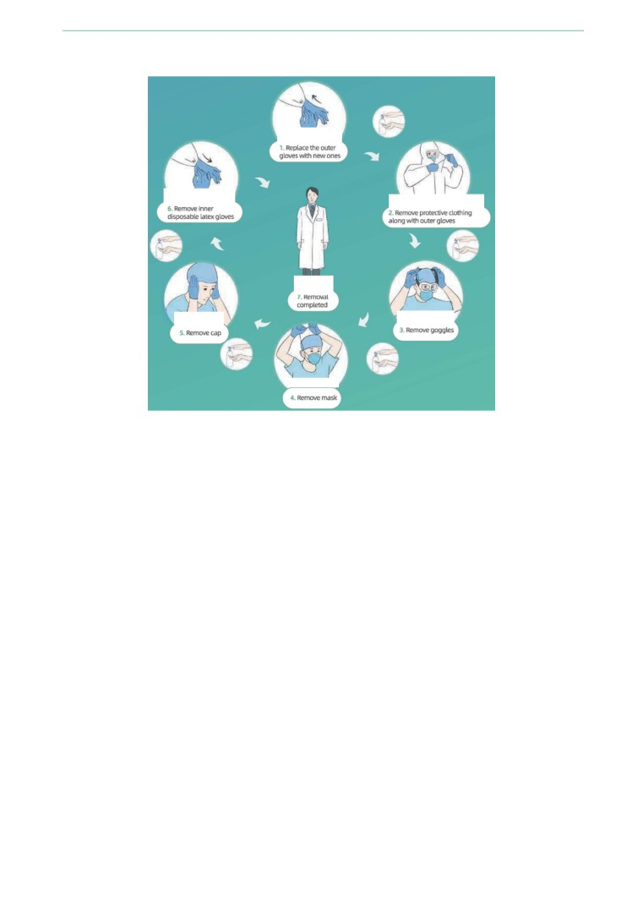

Справочник по профилактике и лечению COVID-19
Первая клиническая больница. Медицинский Факультет университета Чжэцзян.
Справочник составлен на основании клинических данных и опыта
Предисловие редактора:
Столкнувшись с неизвестным вирусом, наилучшим выходом для нас является обмен информацией и совместная работа.
Публикация этого справочника является одним из лучших способов отметить мужество и мудрость, проявленные нашими работниками
здравоохранения за последние два месяца.
Благодарю всех, кто внес вклад в составление этого Справочника, поделился бесценным опытом с коллегами-медиками по всему миру, тем
самым спасая жизнь пациентов.
Благодарю за поддержку коллег - работников в сфере здравоохранения в Китае, которые поделились с нами своим полезным опытом,
который помог нам определить направление работы.
Благодарю Фонд Джека Ма за внедрение этой программы, а также AliHealth за техническую поддержку при составление этого
Справочника, который содержит информацию по борьбе с эпидемией.
Справочник доступен для всех бесплатно. Однако, ввиду ограниченного времени для его составления, в Справочнике могут быть
некоторые ошибки и недоработки, поэтому ваши отзывы и рекомендации приветствуются!
Профессор Тинбо Лян (Tingbo LIANG)
Главный редактор Справочника по профилактике и лечению COVID-19
Главный врач Первой клинической больницы, Медицинский факультет университета Чжэцзян
Handbook of COVID-19 Prevention and Treatment
Предисловие
Человечеству объявлена беспрецедентная глобальная «война», и наш враг - это новое заболевание - коронавирус.
«Полем битвы»
являются больницы, а наши «солдаты» - это медицинские работники.
Чтобы победить в этой «войне», мы, прежде всего, должны обеспечить медработникам необходимые ресурсы и условия, включая обмен
опытом, техническими знаниями и средствами. Нам необходима уверенность, что больница - это «поле битвы», где мы побеждаем вирус, а
не он нас.
Для этих целей Фонд Джека Ма и Фонд Alibaba созвали группу медицинских экспертов, которые вернулись из центров борьбы с
пандемией. При поддержке специалистов Первой клинической больницы при Медицинском факультете университета Чжэцзян (FAHZU),
эксперты, имея клинический опыт лечения, оперативно опубликовали справочник с рекомендациями по предотвращению распространения
коронавируса. Справочник предлагает советы и рекомендации по борьбе с пандемией для медицинских работников по всему миру, которые
планируют «вступить в бой» с заболеванием.
Выражаю особую благодарность медицинскому персоналу FAHZU. Принимая на себя огромный риск при лечении пациентов с COVID-19,
они зафиксировали свой ежедневный опыт, который изложен в этом Справочнике. За последние 50 дней в FAHZU поступили 104 пациента
с подтвержденным диагнозом, в том числе 78 пациентов в тяжелом и критическом состоянии. Благодаря новаторским разработкам и
усилиям медицинского персонала, а также применению новых технологий, мы, на сегодняшний день, стали свидетелями чуда. Ни один
медработник не был инфицирован, не было случаев неправильного диагноза или смерти пациентов.
Сегодня, в связи с распространением пандемии, этот опыт является наиболее ценным источником информации и самым важным
«оружием» для медицинских работников. Это совершенно новая болезнь, и Китай первым пострадал от пандемии. Изоляция, диагностика,
лечение, защитные меры и реабилитация начались с «нуля». Мы надеемся, что этот Справочник сможет предоставить врачам и
медработникам в других пострадавших районах ценную информацию, чтобы им не пришлось «сражаться» в одиночку.
Эта пандемия является общечеловеческой проблемой, возникшей в эпоху глобализации. В данный момент обмен ресурсами, опытом и
знаниями, независимо от вашей позиции, является нашим единственным шансом на победу. Настоящим средством от этой пандемии будет
не изоляция, а сотрудничество.
Но наша борьба только начинается.
Handbook of COVID-19 Prevention and Treatment
Содержание
Часть первая. Профилактика и контроль
I. Контроль и управление в местах изоляции
1
II.
Управление персоналом
4
III.
Меры по защите персонала, непосредственно взаимодействующего с зараженными COVID-19
5
IV.
Протоколы госпитальной практики во время эпидемии COVID-19
6
V. Использование цифровых технологий для поддержки профилактики и контроля эпидемии
16
I. Индивидуальное, совместное и междисциплинарное руководство
18
II. Этиология и индикаторы воспаления
19
III. Результаты томографии пациентов с COVID-19
21
IV. Применение бронхоскопии в диагностике и лечении больных COVID-19
22
V. Диагностика и клиническая классификация COVID-19
22
VI. Противовирусная терапия для своевременного устранения возбудителей
23
VII.
Противоударное и анти-гипоксемийное лечение
24
VIII. Рациональное применение антибиотиков для профилактики вторичной инфекции
29
IX. Баланс микроэкологии кишечника и нутритивной поддержки
30
X. ЭКМО-поддержка для пациентов с COVID-19
32
XI.
Лечение пациентов с COVID-19 плазмой реконвалесцентов
35
XII.
Лечение по классификации традиционной китайской медицины (TCM) для улучшения лечебной
эффективности
36
XIII.
Использование лекарственной терапии у пациентов с COVID-19
37
XIV.
Психологическая интервенция у пациентов COVID-19
41
XV. Реабилитационная терапия для пациентов COVID-19
42
XVI.
Трансплантация легких у пациентов с COVID-19
44
XVII.
Стандарты выписки и план наблюдения за пациентами с COVID-19
45
Часть третья Уход
I.
Уход за пациентами, получающими кислородную терапию через высокопоточную носовую канюлю
(ВПНК)
47
II.
Уход за больными с искусственной вентиляцией легких
47
III.
Ежедневное ведение и контроль ЭКМО (экстракорпоральной мембранной оксигенации)
49
IV.
Уход за больными с ALSS (Система искусственной поддержки печени)
50
V.
Уход при непрерывной заместительной почечной терапии (НЗПТ)
51
VI.
Общий уход
52
Приложение
I. Пример медицинской рекомендации для пациентов с COVID-19
53
II. Процесс онлайн консультации по диагностике и лечению
57
Список литературы
59
Handbook of COVID-19 Prevention and Treatment
7
Handbook of COVID-19 Prevention and Treatment
Часть первая. Профилактика и
контроль
I. Контроль и управление в местах изоляции
1
Клинические меры
1.1
Порядок доступа и передвижения в помещениях
(1) Медицинские учреждения должны обеспечить относительно изолированный доступ в помещения для больных, в т.ч. односторонний
проход и доступ в помещение больницы, с хорошо обозреваемыми предупредительными знаками;
(2) Передвижение людей в помещениях должно быть распределено по принципу "три зоны и два прохода": зона содержания зараженных,
зона содержания потенциально зараженных и "чистая" зона, помеченная хорошо обозреваемыми предупредительными знаками, а также две
буферных зоны между зонами для зараженных и потенциально зараженных;
(3) Необходимо оборудовать отдельный проход в зараженные помещения, визуально обозначенную зону доставки с односторонним
движением и проходом из служебной зоны (потенциально зараженная зона) в изолятор (зараженная зона);
(4) Необходимо стандартизировать соответствующие процедуры и порядок использования и ношения защитных средств медицинским
персоналом. Необходимо составить карты всех зон, установить зеркала в полный рост и строго контролировать передвижение по всем
проходам, коридорам и др. помещениям.
(5) Следует назначить специалистов по профилактике и контролю распространения инфекции, которые, для предотвращения заражения,
будут контролировать порядок надевания и снятия защитной одежды и оборудования медицинским персоналом;
(6) Любые не продезинфицированные предметы не должны выноситься за пределы зоны.
1.2
Расположение зон
(1) Необходимо оборудовать отдельное помещение для осмотра, лабораторию, обсервационное помещение, реанимационное помещение;
(2) Необходимо оборудовать помещение для предварительного осмотра и сортировочное помещение, в котором проводится
предварительный осмотр пациентов;
(3) Необходимы раздельные зоны для диагностики и для лечения: пациенты с признаками эпидемиологического заболевания и/или
пациенты с симптомами респираторных заболеваний должны быть помещены в зоне для пациентов с подозрением на COVID-19; пациенты
с симптомами обычного воспаления без выраженных признаков эпидемиологического заболевания помещаются в зоне для больных с
обычными диагнозами.
1.3
Меры контроля пациентов
(1) Пациенты с симптомами воспалений обязаны носить медицинские маски;
(2) В пункты ожидания допускаются только пациенты, чтобы не допускать переполненность помещения;
(3) Длительность приема пациентов должна быть сведена к минимуму во избежание перекрестного инфицирования;
(4) Необходимо информировать пациентов и членов их семей на предмет ранней диагностики и определения симптомов заболевания, а
также о необходимых профилактических мерах.
8
Handbook of COVID-19 Prevention and Treatment
1.1
Классификация пациентов, госпитализация и отмена госпитализации
(1) Все медицинские работники должны быть осведомлены на предмет клинических признаков COVID-19 и обследовать пациентов в
соответствии с критериями обследования, изложенными далее (см. Таблицу I);
(2) NAT-тестирование (тестирование нуклеиновых кислот) проводится для пациентов, симптомы которых соответствуют критериям для
пациентов с подозрением на инфекцию;
(3) Пациенты, симптомы которых не соответствуют критериям для пациентов с подозрением на инфекцию, если у них не имеется
подтвержденного случая эпидемиологического заболевания в анамнезе, но при этом у них остаются подозрения на COVID-19 ввиду
симптомов и, в особенности, результатов анализа, должны наблюдаться дальше для определения окончательного диагноза;
(4) Пациенты с отрицательным результатом должны пройти повторное тестирование через 24 часа. Если у пациента два отрицательных
NAT -теста подряд при отрицательных клинических признаках, такой пациент исключается из подозреваемых на заражение COVlD-19 и
выписывается из больницы. Если у пациента не исключается заражение COVID-19 ввиду клинических признаков, такой пациент должен
проходить дополнительное NAT-тестирование каждые 24 часа, пока диагноз не будет исключен или подтвержден;
(5) В случае положительных результатов NAT-теста, пациенты должны быть госпитализированы и проходить лечение в соответствии с их
состоянием (общий изолятор или отделение интенсивной терапии).
Таблица 1. Критерии для определения результатов анализов пациентов с подозрением на COVID-19
В течение 14 дней до проявления заболевания пациент
путешествовал или проживал в странах или регионах с высокой
степенью риска заражения;
В течение 14 дней до проявления заболевания пациент
контактировал с лицами, зараженными SARS-CoV-2
(с
позитивными результатами NAT-теста);
Эпидемиологический
В течение 14 дней до проявления заболевания пациент
анамнез
непосредственно контактировал с лицами, имеющими
симптомы воспаления или респираторного заболевания на
территории стран или регионов с высокой степенью риска
Пациент не имеет в
заражения;
анамнезе случаев
эпидемиологического
Пациент отвечает
Пациент не имеет в
заболевания, но
критериям
анамнезе случаев
Концентрация пациентов с заражением (2 и более случаев
имеет 1-2
эпидемиологическогоэпидемиологического
воспаления и/или респираторных заболеваний, в таких местах
клинических
заболевания с 2-мя
заболевания, но
как дома, офисы, школьные классы и т.п., в течение периода 2-х
признака и по
клиническими
имеет 3 клинических
недель).
результатам его
проявлениями.
признака.
У пациента присутствует воспаление и/или симптомы
анализов заражение
респираторного заболевания;
COVID-19 не
исключено.
У пациента наблюдаются такие результаты КТ с признаками
COVID-19: множественные затемненные пятна и рано
проявляемые внутритканевые изменения, особенно в области
Клинические
легких. Далее развиваются затемнения по типу матового стекла
признаки
и инфильтраты в обоих легких. В тяжелых случаях у пациента
может наблюдаться уплотнение легочной ткани и выпот
плевральной жидкости;
Количество лейкоцитов на ранней стадии заболевания в
норме или снижается, а количество лимфоцитов со временем
уменьшается.
Консультация
Диагностика в случаях подозрений на заражение
Да
Да
экспертов
9
Handbook of COVID-19 Prevention and Treatment
2 Зона изолятора
2.1
Область применения
Зона изолятора включает в себя зону наблюдения, изоляционные палаты и изолированную зону интенсивной терапии. Планировка здания и
организация рабочих процессов должны соответствовать соответствующим требованиям Технического регламента больничной изоляции.
Медицинские работники в помещениях с отрицательным давлением должны осуществлять стандартизированное управление, в
соответствии с установленными. Доступ в изоляторы должен быть строго ограничен.
2.2
Порядок доступа и передвижения в помещениях
Следует обратиться в отделение клиники, специализирующееся на воспалительных заболеваниях.
2.3
Требования и порядок контроля больничных палат
(1)
Пациенты с подозрением на заражение и подтвержденным диагнозом должны содержаться в различных палатах или концах
помещения палаты;
(2)
Пациенты с подозрением на заражение должны быть помещены в отдельные одноместные палаты. Каждая комната должна быть
оборудована отдельным санузлом (с ванной), активность пациента должна быть ограничена пребыванием в изоляторе;
(3)
Пациенты с подтвержденным диагнозом могут содержаться в одной палате, на кроватях, расположенных на расстоянии не менее 1,2
метров (прибл. 4 фута). В палатах должен быть санузел с ванной комнатой, активность пациентов должна ограничиваться пребыванием в
изоляторе.
2.4
Меры контроля пациентов
(1)
Посещения родственников и медсестринское обслуживание исключены. Пациентам разрешается использование электронных
коммуникационных устройств для общения с близкими людьми;
(2)
Необходимо проинструктировать пациентов на предмет пресечения дальнейшего распространения COVlD-19, правильного ношения
медицинских масок, своевременного мытья рук, правильного поведения в случае кашля, необходимости медицинского осмотра и
домашнего карантина.
10
Handbook of COVID-19 Prevention and Treatment
II.
Управление персоналом
1
Организация работы
(1)
Перед началом работы в клинике для зараженных, персонал должен пройти подробный инструктаж и проверку полученных знаний,
знать порядок, в котором следует надевать и снимать защитную одежду и оборудование. Персонал должен пройти соответствующую
экзаменацию, прежде чем будет допущен к работе в таких палатах.
(2)
Персонал должен быть разделен на разные рабочие группы. Каждая рабочая группа должна работать в изолированных помещениях
не более 4 часов. Рабочие группы должны работать в изоляторах (зараженных зонах) в разное время.
(3)
Следует организовать осмотр и дезинфекцию каждой рабочей группы, ограничить передвижение персонала в изоляторы и из них.
(4)
Перед уходом с дежурства персонал должен вымыться и провести необходимые процедуры личной гигиены, чтобы предотвратить
возможное заражение своих дыхательных путей и слизистых оболочек.
2
Процедуры по охране здоровья
(1)
Медицинский персонал, непосредственно взаимодействующий с зараженными в изоляторах, сотрудники медицинских технических
служб, работники служб снабжения должны проживать в отдельных жилых помещениях и покидать эти помещения без разрешения.
(2)
Для повышения иммунитета медицинского персонала должно быть обеспечено полноценное питание.
(3)
Необходимо контролировать состояние здоровья всего персонала на рабочем месте, контролировать состояние здоровья
непосредственного рабочего персонала, включая контроль температуры тела и симптомов респираторных заболеваний; оказывать
психологическую поддержку, помогать справляться с физиологическими проблемами, возникающими у таких специалистов.
(4)
Если у работников присутствуют соответствующие симптомы, напр., воспалительный процесс, они должны быть немедленно
изолированы, обследованы и пройти NAT-тест.
(5)
Если непосредственный рабочий персонал, медработники, сотрудники медицинских технических служб, сотрудники служб
снабжения заканчивают работу в изоляторах и возвращаются в обычную нерабочую среду, они должны предварительно пройти NAT-
тестирование на наличие SARS-CoV-2. Если результаты будут отрицательными, они всем коллективом должны быть помещены в
специальный изолятор на 14 дней, прежде, чем они будут выписаны из-под наблюдения.
11
Handbook of COVID-19 Prevention and Treatment
III. Меры по защите персонала, непосредственно взаимодействующего с зараженными COVID-19
Уровни защиты
Защитное оборудование
Область применения
•
Одноразовые медицинские шапки
•
Одноразовые медицинские маски
•
Рабочая форма
•
Одноразовые латексные перчатки и/или
Уровень защиты 1
•
Отбор пациентов перед осмотром
одноразовая изолирующая одежда, если она
необходима
•
Амбулаторное отделение воспалительных заболеваний
•
Зона изолятора (включая изолированное отделение
интенсивной терапии)
•
Одноразовые медицинские шапки
•
Анализы не-респираторных образцов пациентов с
•
Медицинская защитная маска (N95)
подозрением на заражение или с подтвержденным
•
Рабочая форма
диагнозом
•
Одноразовая медицинская защитная униформа
Уровень защиты 2
•
Томографическое исследование пациентов с подозрением
•
Одноразовые латексные перчатки
на заражение или с подтвержденным диагнозом
•
Защитные очки
•
Дезинфекция хирургических инструментов, используемых
в работе с пациентами с подозрением на заражение или с
подтвержденным диагнозом
•
При проведении таких операций, как интубация трахеи,
трахеотомия, бронхофиброскопия,
•
Одноразовые медицинские шапки
гастроэнтерологическая эндоскопия и т.п. для пациентов с
•
Медицинская защитная маска (N95)
подозрением на заражение или с подтвержденным
•
Рабочая форма
диагнозом, во время которых могут распыляться или
•
Одноразовая медицинская защитная униформа
разбрызгиваться дыхательные выделения или жидкости
•
Одноразовые латексные перчатки
тела/кровь
Уровень защиты 3
•
Полнолицевые респираторные защитные
•
При проведении операций и вскрытия пациентов с
устройства или автономные респираторы для
подозрением на заражение или с подтвержденным
подачи очищенного воздуха
диагнозом
•
Когда персонал проводит NAT-тестирование на COVID-
19
Примечания:
1. Весь персонал должен носить медицинские защитные маски в помещениях медицинских учреждений;
2. Весь персонал отделений неотложной помощи, амбулаторных инфекционных отделений, амбулаторных отделений респираторных
заболеваний, отделений стоматологии, кабинетов эндоскопии
(например, желудочно-кишечной эндоскопии, бронхофиброскопии,
ларингоскопии и др.) должен сменить имеющиеся медицинские защитные маски на маски марки N95, в соответствии с требованиями
уровня защиты 1;
3. Персонал должен должен носить защитные лицевые щитки, как того требует уровень защиты 2 при сборе респираторных образцов у
пациентов с подозрением на заражение или с подтвержденным диагнозом.
12
Handbook of COVID-19 Prevention and Treatment
IV. Протоколы госпитальной практики во время эпидемии COVID-19
1
Порядок надевания и снятия персональной защитной одежны и оборудования перед работой с пациентами с COVID-
19
1. Сначала надеть специальную
рабочую одежду и обувь
7. Надеть одноразовые
латексные перчатки
2. Вымыть руки
8. Одевание
6. Надеть защитные очки и
завершено
3. Надеть одноразовую
одежду
медицинскую шапку
5. Надеть нижние одноразовые
4. Надеть медицинскую
нитриловые/латексные перчатки
защитную маску (N95)
Порядок надевания защитного оборудования
Надеть специальную рабочую одежду и обувь Вымыть руки Надеть одноразовую медицинскую шапку Надеть одноразовую
медицинскую маску (N95) Надеть нижние одноразовые нитриловые/латексные перчатки Надеть защитные очки и защитную одежду
(примечание: если выдана защитная одежда без бахил, необходимо надеть непромокаемые бахилы), надеть одноразовую защитную накидку
(если это требуется в специальных рабочих зонах), а также защитный щиток для лица/автономный респиратор для подачи очищенного
воздуха(если это требуется в специальных рабочих зонах) надеть верхние одноразовые латексные перчатки

13
Handbook of COVID-19 Prevention and Treatment
1. Заменить верхние
перчатки новыми.
6. Снять нижние одноразовые
латексные перчатки
2. Снять защитную одежду и перчатки
7. Удаление
одежды
завершено
5. Снять защитную
3. Снять защитные очки
медицинскую шапку
4. Снять маску
Процедура снятия персонального защитного оборудования
Вымыть руки и удалить видимые телесные жидкости/пятна крови на наружных поверхностях обеих рук Вымыть руки, заменить верхние
перчатки новыми
Снять автономный респиратор для подачи очищенного воздуха или самовсасывающую полнолицевую маску
фильтрующего типа/маску (если используется) Вымыть руки Снять одноразовую накидку и верхние перчатки (если используются)
Вымыть руки и надеть верхние перчатки Зайти в помещение для раздевания № 1 Вымыть руки и снять защитную одежду, а также
верхние перчатки (перчатки и защитную одежду следует вывернуть наизнанку и свернуть) (примечание: вместе с защитной одеждой
следует снять также бахилы) Вымыть руки Зайти в помещение для раздевания № Вымыть руки и снять защитные очки Вымыть
руки и снять защитную маску Вымыть руки и снять защитную шапку Вымыть руки и снять нижние одноразовые латексные перчатки
Вымыть руки и выйти из помещение для раздевания № Вымыть руки, принять душ, надеть чистую одежду и выйти в не зараженное,
чистое помещение
14
Handbook of COVID-19 Prevention and Treatment
2
Процедуры дезинфекции в зоне изолятора COVID-19
2.1
Дезинфекция пола и стен
(1) Видимые загрязнения должны быть полностью удалены перед дезинфекцией, помещения обработаны в соответствии с процедурами
удаления крови и физиологических жидкостей;
(2) Продезинфицировать пол и стены хлорсодержащим дезинфицирующим средством в количестве 1000 мг/л путем мытья пола,
распыления или протирания;
(3) Следует убедиться, что дезинфекция проводится в течение не менее 30 минут;
(4) Дезинфекцию следует проводить три раза в день и повторять процедуру в любое время, когда присутствует загрязнение.
2.2
Дезинфекция поверхностей предметов
(1) Видимые загрязнения следует полностью удалять перед дезинфекцией и обрабатывать в соответствии с технологическим регламентом
обезвреживания пролитой крови и биологических жидкостей;
(2) Протрите поверхности предметов дезинфицирующим средством, содержащим хлор в концентрации 1000 мг/мл, или салфетками с
эффективным хлором; подождите 30 минут и промойте чистой водой. Выполняйте процедуру дезинфекции трижды в день (повторяйте при
любом подозрении на загрязнение);
(3) Вначале протирайте более чистые участки, затем более загрязненные: вначале протирайте поверхности предметов, которых касаются
реже, затем — предметов, которых касаются часто (после протирания поверхности предмета следует заменить использованную салфетку
новой).
2.3
Дезинфекция воздуха
(1) Плазменные стерилизаторы воздуха можно использовать для дезинфекции воздуха в то время, когда в помещении находятся люди;
(2) При отсутствии плазменных стерилизаторов воздуха используйте ультрафиолетовые лампы (длительность одного сеанса обработки составляет 1 час).
Выполняйте эту процедуру три раза в день.
2.4
Обезвреживание фекалий и сточных вод
(1) Прежде чем сливать жидкие отходы в городскую водосточную систему, следует выполнить дезинфекцию фекалий и сточных вод
посредством обработки хлорсодержащим дезинфицирующим средством (для первичной обработки концентрация активного хлора должна
составлять более 40 мг/л). Длительность дезинфекции должна составлять не менее 1,5 часов;
(2) Концентрация общего остаточного хлора в продезинфицированных сточных водых должна составлять не менее 10 мг/л.
15
Handbook of COVID-19 Prevention and Treatment
3
Технологический регламент обезвреживания пролитой крови/биологических жидкостей пациентов, заражённых
COVID-19
3.1
Для удаления небольшого объема (<10 мл) пролитой крови/биологических жидкостей:
(1)
Вариант 1: Пролитую жидкость следует накрыть хлорсодержащими дезинфицирующими салфетками (содержащими 5000 мг/л
эффективного хлора) и осторожно удалить, затем поверхности предмета следует дважды протереть хлорсодержащими дезинфицирующими
салфетками (содержащими 500 мг/л эффективного хлора);
(2)
Вариант 2: Тщательно удалите пролитую жидкость одноразовыми впитывающими материалами, такими как марля, салфетки и т.п.,
выдержанных в дезинфицирующем растворе с содержанием хлора 5000 мг/мл.
3.2
Для удаления большого объема (>10 мл) пролитой крови и биологических жидкостей:
(1)
В первую очередь, необходимо обозначить наличие пролитой жидкости с помощью специальных отметок;
(2)
Выполнить действия согласно одному из описанных ниже вариантов:
Вариант 1: Собрать пролитую жидкость, положив поверх нее на 30 минут чистое впитывающее полотенце (содержащего гидроперекись
ацетила, благодаря которой одно полотенце может впитать до 1 л жидкости), и затем очистить загрязнённую область после удаления
загрязняющих веществ.
Вариант
2: Полностью засыпать пролитую жидкость дезинфицирующим порошком или хлорной известью, содержащей
водопоглотительные компоненты, или полностью накрыть её одноразовыми водопоглотительными материалами, затем залить
водопоглотительный материал достаточным количеством дезинфицирующего средства, содержащего хлор в концентрации 10 000 мг/л (или
накрыть сухим полотенцем, которое будет подвергнуто дезинфекции высокого уровня). Оставить не менее, чем на 30 минут, затем
тщательно удалить пролитую жидкость.
(3)
Фекалии, выделения, рвотные массы и т.п. пациентов следует собирать в специальные контейнеры и дезинфицировать в течение 2
часов с помощью дезинфицирующего средства, содержащего хлор в концентрации 20 000 мг/л, при этом соотношение пролитой жидкости
и дезинфицирующего средства должно составлять 1:2.
(4)
После удаления пролитой жидкости следует продезинфицировать поверхности загрязненной среды или предметов.
(5)
Контейнеры, содержащие загрязняющие вещества, можно выдерживать и дезинфицировать с помощью дезинцифирующего средства,
содержащего активный хлор в концентрации 5000 мг/л, в течение 30 минут, после чего выполнять очистку.
(6)
Собранные загрязняющие вещества следует утилизировать как медицинские отходы.
(7)
Использованные предметы следует помещать в двуслойные пакеты для медицинских отходов и утилизировать как медицинские
отходы.
16
Handbook of COVID-19 Prevention and Treatment
4
Дезинфекция медицинских устройств многократного использования, связанных с COVID-19
4.1
Дезинфекция фильтрующего респиратора с принудительной подачей воздуха
Фильтрующий респиратор с принудительной подачей воздуха
Поверхность
Блок фильтров для
Эндотрахеальная
Капюшон
Двигатель и ремень
улавливания
батареи
трубка
твёрдых частиц
НЕ отсоединяйте
блок фильтров
Погрузите в
дезинфицирующее
Повторно протрите их дезинфицирующим средством, содержащим хлор в концентрации 1000
средство, содержащее
мг/л, и оставьте на 30 минут для воздействия дезинфицирующего средства
хлор в концентрации
1000 мг/л, на 30 минут
Тщательно протрите все части несколько раз мягкой тканью, смоченной в очищающую
Промойте чистой
жидкость (чистую воду)
водой
Дайте отдельным частям высохнуть и поместите их в сумку с застёжкой-молнией для
последующего использования.
Примечание: Не касайтесь
Примечание: Не
Примечание: Пожалуйста, будьте
фильтрующего элемента при
допускайте
осторожны при протирании
очистке наружной
попадания жидкости
контактов батареи, расположенных
поверхности. Выполняйте
в воздуховыпускное
в нижней части мотора. Не
замену фильтрующего
отверстие или
прикасайтесь к контактам батареи.
элемента в соответствии с
двигатель основного
Убедитесь в том, что эта часть
инструкцией к изделию.
устройства.
полностью сухая, прежде чем
использовать изделие в
следующий раз или передавать на
хранение.
Примечание: Описанный выше технологический регламент дезинфекции защитного капюшона относится только к защитным капюшонам
многократного использования (не относится к одноразовым защитным капюшонам).
17
Handbook of COVID-19 Prevention and Treatment
4.2
Технологический регламент очистки и дезинфекции устройств для эндоскопии пищеварительной системы и бронхофиброскопии
(1)
Погрузите эндоскоп и клапаны для многократного использования в 0,23% гидроперекись ацетила
(проверьте концентрацию
дезинфицирующего средства перед использованием, чтобы убедиться в его эффективности);
(2)
Подключите перфузионный катетер к каждому из каналов эндоскопа, введите 0,23% гидроперекись ацетила в катетер с помощью
шприца объёмом 50 мл до наполнения и подождите 5 минут;
(3)
Отсоедините перфузионный катетер и промойте каждую полость и клапан эндоскопа с помощью специальной одноразовой щётки;
(4)
Поместите клапаны в генератор УЗЧ, содержащий фермент для осцилляции. Подключите перфузионный катетер каждого канала к
эндоскопу. Введите 0,23% гидроперекись ацетила в катетер с помощью шприца объемом 50 мл и промывайте катетер непрерывно в течение
5 минут. В течение 1 минуты вводите воздух, чтобы просушить его.
(5)
Введите чистую воду в катетер с помощью шприца объемом 50 мл и промывайте катетер непрерывно в течение 3 минут. В течение 1
минуты вводите воздух, чтобы просушить его.
(6)
Выполните тест на герметичность эндоскопа;
(7)
Поместите его в автоматизированный аппарат для промывания и дезинфекции эндоскопов. Установите высокий уровень
дезинфекции для обработки;
(8)
Направьте устройства в центр дезинфекции для проведения стерилизации с помощью этиленоксида.
4.3
Предварительная обработка других медицинских устройств многократного использования
(1)
При отсутствии заметных загрязняющих веществ поместите устройство в дезинфицирующее средство, содержащее хлор в
концентрации 1000 мг/л, по крайней мере на 30 минут;
(2)
При наличии видимых загрязняющих веществ погрузите устройство в дезинфицирующее средство, содержащее хлор в концентрации
5000 мг/л, по крайней мере на 30 минут;
(3)
После сушки поместите устройство в герметичную упаковку и направьте в центр дезинфекции.
18
Handbook of COVID-19 Prevention and Treatment
5
Технологический регламент дезинфекции инфицированных тканых материалов пациентов с предполагаемым или
подтвержденным заражением
5.1
Инфицированные тканые материалы
(1)
Одежда, постельное бельё, покрывала и наволочки, используемые пациентами;
(2)
Занавески для кровати в палате;
(3)
Полотенца для ног, которые используются для очистки окружающей среды.
5.2
Методы сбора
(1)
Во-первых, упакуйте тканые материалы в одноразовый водорастворимый полиэтиленовый пакет и плотно закройте его с помощью
стяжек;
(2)
Затем упакуйте этот пакет в другой полиэтиленовый пакет, плотно закройте его с помощью стяжек для получения S-образной формы;
(3)
Наконец, упакуйте полиэтиленовый пакет в желтый тканевый мешок и плотно закройте его с помощью стяжек;
(4)
Прикрепите специальную этикетку, содержащую название инфекции и отделения. Отправьте мешок в прачечную.
5.3
Хранение и стирка
(1)
Инфицированные тканые материалы следует отделить от других инфицированных тканевых материалов (не связанных с COVID-19)
и стирать в специальной стиральной машине;
(2)
Промойте и продезинфицируйте эти ткани хлорсодержащим дезинфицирующим средством при температуре 90 oС в течение не менее
30 минут.
5.4
Дезинфекция транспортных средств
(1)
Для транспортировки инфицированных тканых материалов следует использовать специальные средства;
(2)
Эти средства следует безотлагательно дезинфицировать после каждого использования с целью транспортировки инфицированных
тканых материалов;
(3)
Транспортные средства следует протирать хлорсодержащим дезинфицирующим средством (с активным хлором в концентрации 1000
мг/л). Оставьте дезинфицирующее средство на 30 минут, затем протрите начисто, используя чистую воду.
19
Handbook of COVID-19 Prevention and Treatment
6
Технологический регламент утилизации медицинских отходов, связанных с COVID-19
(1)
Все отходы, полученные от пациентов с предполагаемой или подтвержденной инфекцией, следует утилизировать как медицинские
отходы;
(2)
Поместите медицинские отходы в двуслойный пакет для медицинских отходов, плотно закройте пакет с помощью стяжек для
получения S-образной формы и распылите на пакет дезинфицирующее средство, содержащее хлор в концентрации 1000 мг/л;
(3)
Поместите острые предметы в специальный пластиковый контейнер, плотно закройте контейнер и распылите на контейнер
дезинфицирующее средство, содержащее хлор в концентрации 1000 мг/л;
(4)
Поместите упакованные отходы в контейнер для перемещения медицинских отходов, прикрепите специальную этикетку, которая
содержит информацию об инфекции, плотно закройте контейнер и переместите в соответствующее место;
(5)
Перемещайте отходы в пункт временного хранения медицинских отходов по установленному маршруту в установленное время и
храните отходы отдельно в установленном месте;
(6)
Сбор и утилизацию медицинских отходов должна осуществлять утверждённая организация по утилизации медицинских отходов.
7
Технологический регламент по уменьшению риска заражения COVID-19, связанного с родом занятий
Контакт с COVID-19, связанный с родом занятий
Контакт с
Воздействие на
Прямое воздействие
Контакт с
Травма острым
поврежденной
слизистые
на дыхательные пути
неповрежден
предметом
кожей
оболочки,
ной кожей
например, глаза
Удалите загрязнения
немедленно покиньте
Промойте
Выдавите кровь из
зону изоляции.
чистой тканью или
большим
проксимального конца
Прополощите горло
марлей, затем нанесите на
количеством
в дистальный
большим количеством
кожу 0,5% йодофор или
физиологического
физиологическог
→Промойте рану
75% спирт и дайте
раствора или 0,05%
о раствора или
проточной водой
раствору постоять не
йодофора. Смочите
0,05% йодофора.
→Продезинфицируйте
менее 3 минут для
ватный тампон в 75%
75% спиртом или 0,5%
спирте и круговыми
дезинфекции, затем
йодофором
движениями
тщательно промойте
аккуратно протрите
проточной водой
носовую полость
Эвакуируйтесь из зоны изоляции и перейдите в специально отведённую изоляционную комнату
Передайте информацию в соответствующие подразделения
Изолируйте и ведите наблюдение за людьми, которые вступали в контакт (за исключением контакта с
неповреждённой кожей), на 14 дней. В случае появления симптомов своевременно сообщайте об этом в
соответствующие подразделения
14
Handbook of COVID-19 Prevention and Treatment
(1)
Контакт с кожей: Кожа непосредственно загрязнена большим количеством видимых биологических жидкостей, крови, выделений
или фекалий пациента.
(2)
Контакт со слизистой оболочкой: Слизистые оболочки, такие как глаза и дыхательные пути, непосредственно загрязнены
видимыми биологическими жидкостями, кровью, выделениями или фекалиями пациента.
(3)
Травма острым предметом: Прокалывание тела острыми предметами, которые находились в непосредственном контакте с
биологическими жидкостями пациента, кровью, выделениями или фекалиями.
(4)
Прямое воздействие на дыхательные пути: Спадение маски, в результате чего произошел контакт рта или носа с пациентом с
подтвержденной инфекцией (на расстоянии 1 м), который не носит маску.
8
Хирургические операции у пациентов с предполагаемой или подтвержденной инфекцией
8.1 Требования к операционным и СИЗ персонала
(1)
Расположите пациента в операционной с отрицательным давлением. Проверьте температуру, влажность и давление в
операционной;
(2)
Подготовьте весь необходимый инструментарий для операции и по возможности используйте одноразовый хирургический
инструментарий;
(3)
Весь хирургический персонал (в том числе хирурги, анестезиологи, медсёстры, ответственные за мытье рук, и дежурные медсёстры
в операционной) должен надевать свои СИЗ в буферной комнате, прежде чем войти в операционную: Наденьте двойные шапочки,
медицинскую защитную маску (N95), медицинские очки, медицинскую защитную одежду, бахилы, латексные перчатки и фильтрующий
респиратор с принудительной подачей воздуха;
(4)
Хирурги и медсёстры, ответственные за мытье рук, должны носить одноразовую стерильную операционную одежду и стерильные
перчатки, помимо вышеуказанных СИЗ;
(5)
Пациенты должны носить одноразовые шапочки и одноразовые хирургические маски в соответствии с ситуацией;
(7)
Дежурные медсёстры в буферной комнате отвечают за доставку инструментария из буферной зоны в операционную с
отрицательным давлением;
(8)
Во время операции буферная комната и операционная должны быть плотно закрыты, и операция следует проводить лишь в том
случае, если в операционной поддерживается отрицательное давление;
(9)
Посторонний персонал не должен входить в операционную.
15
Handbook of COVID-19 Prevention and Treatment
8.2
Технологический регламент окончательной дезинфекции
(1)
Медицинские отходы следует утилизировать как медицинские отходы, связанные с COVID-19;
(2)
Медицинские устройства многоразового использования следует дезинфицировать в соответствии с технологическим регламентом
дезинфекции медицинских устройств многоразового использования, связанных с SARS-CoV-2;
(3)
Медицинские тканые материалы следует дезинфицировать и утилизировать в соответствии с технологическим регламентом
дезинфекции инфицированных тканых материалов, связанных с SARS-CoV-2;
(4)
Поверхности предметов (инструментов и устройств, в том числе стола для инструментов, операционного стола, операционной
кровати и др.);
Видимые загрязнения кровью/биологическими жидкостями должны быть полностью удалены перед дезинфекцией (помещения
обработаны в соответствии с процедурами удаления крови и биологических жидкостей).
Все поверхности следует протирать дезинфицирующим средством, содержащим активный хлор в концентрации 1000 мг/л, и
оставлять на 30 минут с дезинфицирующим средством.
(5)
Полы и стены:
Видимые загрязнения кровью/биологическими жидкостями должны быть полностью удалены перед дезинфекцией (помещения
обработаны в соответствии с процедурами удаления крови и биологических жидкостей).
Все поверхности следует протирать дезинфицирующим средством, содержащим активный хлор в концентрации 1000 мг/л, и
оставлять на 30 минут с дезинфицирующим средством.
(6)
Воздух в помещении: Выключите фильтровентиляционный модуль (ФВМ). Продезинфицируйте воздух посредством облучения
ультрафиолетовой лампой в течение не менее 1 часа. Включите ФВМ для автоматической очистки воздуха в течение не менее 2 часов.
9
Технологический регламент обращения с телами умерших пациентов с предполагаемой или подтвержденной
инфекцией
(1)
СИЗ персонала: Персонал должен быть полностью защищён рабочей одеждой, одноразовыми хирургическими шапочками,
одноразовыми перчатками и плотными резиновыми перчатками с длинными рукавами, медицинской одноразовой защитной одеждой,
медицинскими защитными масками (N95) или фильтрующими респираторами с принудительной подачей воздуха (ФРППВ), защитными
лицевыми щитками, рабочей обувью или резиновыми сапогами, водонепроницаемыми бахилами, водонепроницаемыми фартуками или
водонепроницаемыми изолирующими халатами и т. д.
(2)
Обработка трупов: Заполните все отверстия или раны пациента, такие как рот, нос, уши, анус и трахеотомические отверстия,
ватными шариками или марлей, смоченной в дезинфицирующем средстве, содержащем хлор в концентрации 3000-5000 мг/л, или 0,5%
гидроперекиси ацетила.
(3)
Обёртывание: Оберните труп двуслойным тканым материалом, пропитанным дезинфицирующим средством, и поместите его в
двуслойный герметичный листовой материал для обёртывания трупов, пропитанный хлорсодержащим дезинфицирующим средством.
(4)
Персонал должен в кратчайшие сроки перенести тело в изолятор больницы через загрязненную зону к специальному лифту, после
чего вывезти специальным транспортным средством непосредственно в указанное место для кремации.
(5)
Заключительная дезинфекция: Выполните заключительную дезинфекцию палаты изолятора и лифта.
16
Handbook of COVID-19 Prevention and Treatment
V. Использование цифровых технологий для поддержки профилактики и контроля эпидемии
1
Снижение риска перекрёстной инфекции, когда пациенты обращаются за медицинской помощью
(1) Рекомендуйте населению обращаться за медицинской помощью в неэкстренных случаях (например, по вопросам лечения хронических
заболеваний) в онлайн-режиме, чтобы уменьшить количество посетителей в медицинских учреждениях. Это минимизирует риск
перекрёстной инфекции.
(2) Пациенты, которым необходимо посетить медицинские учреждения, должны записываться на приём с помощью других средств,
включая интернет-порталы, которые предоставляют необходимые указания в отношении транспорта, парковки, времени прибытия,
защитных мер, информации о сортировке, навигации в помещении и т.д. Заблаговременно собирайте исчерпывающую информацию о
пациентах в онлайн-режиме, чтобы повысить эффективность диагностики и лечения и ограничить длительность визита пациента.
(3) Рекомендуйте пациентам в полной мере пользоваться цифровыми устройствами самообслуживания, чтобы избежать контакта с
другими людьми и снизить риск перекрёстных инфекций.
2
Снижение интенсивности труда и риска заражения медицинского персонала
(1) Соберите общеизвестные знания и опыт экспертов с помощью дистанционной консультации и при участии многопрофильной группы
(МПГ), чтобы предложить оптимальную терапию в сложных и запутанных случаях.
(2) Используйте мобильную связь и средства дистанционной коммуникации, чтобы снизить ненужные риски контакта и интенсивность
работы медицинского персонала, а также сохранить защитные средства
(3) Заблаговременно используйте доступ к последним данным о состоянии здоровья пациентов в электронном виде через специальные QR-
коды (примечание: для перемещения по городу каждый должен получить ЗЕЛЁНЫЙ QR-код в QR-системе здравоохранения) и онлайн-
эпидемиологические анкеты, чтобы разработать порядок сортировки пациентов, в особенности пациентов с лихорадкой или
предполагаемой инфекцией, а также эффективно предотвратить риск инфекции.
(4) Электронные медицинские карты пациентов в клиниках, где проводят лечение пациентов с лихорадкой, и система КТ Al для COVID-19
могут помочь снизить интенсивность работы, быстро выявить вероятные случаи и избежать ошибочных диагнозов.
3
Быстрое реагирование на срочную необходимость в сдерживании COVID-19
(1) Основные цифровые ресурсы, необходимые облачной больничной системе, позволяют немедленно использовать информационные
системы, необходимые для быстрого реагирования на эпидемию, такие как цифровые системы, оборудованные для вновь созданных
клиник, где проводят лечение пациентов с лихорадкой, а также палат наблюдения за пациентами с лихорадкой и изоляторов.
(2) Используйте информационную систему больницы на основе интернет-инфраструктуры для проведения онлайн-обучения медицинских
работников и использования системы развертывания одним нажатием, а также для облегчения работы и поддержки инженеров в
выполнении удаленного технического обслуживания и обновления новых функций медицинского обслуживания.
17
Handbook of COVID-19 Prevention and Treatment
[ Модель медицинской помощи онлайн FAHZU Internet+ Hospital ]
С началом вспышки COVID-19 модель FAHZU Internet+ Hospital была быстро преобразована для использования с целью получения
медицинской помощи в онлайн-режиме через медицинскую онлайн-платформу Чжэцзян с 24-часовой бесплатной онлайн-консультацией, а
также предоставления услуг телемедицины пациентам в Китае и даже по всему миру. Пациентам предоставляется доступ к
высококачественным медицинским услугам FAHZU на дому, что снижает вероятность передачи инфекции и перекрестного заражения в
результате посещения больницы. По состоянию на 14 марта более 10 000 человек воспользовались онлайн-сервисом FAHZU Internet+
Hospital.
• Инструкция по использованию медицинской онлайн-платформы Чжэцзян:
Скачайте приложение Alipay;
Откройте систему Alipay (китайская версия) и найдите «Медицинскую онлайн-платформу провинции Чжэцзян»;
Выберите больницу (Первая аффилированная больница, Медицинский факультет университета Чжэцзян);
Напишите свой вопрос и дождитесь ответа врача;
Когда врач ответит, появится уведомление. Затем откройте Alipay и нажмите кнопку «Друзья» (Friends);
Нажмите «Медицинская онлайн-платформа Чжэцзян», чтобы увидеть более подробную информацию и начать консультацию.
[Создание международной коммуникационной платформы медицинских экспертов Первой аффилированной больницы
Медицинского факультета университета Чжэцзян]
В связи с распространением эпидемии COVID-19 Первая аффилированная больница Медицинского факультета университета Чжэцзян
(FAHZU) и Alibaba совместно создали международную медицинскую экспертную коммуникационную платформу FAHZU с целью
повышения качества медицинской помощи и лечения, а также содействия обмену глобальным информационным ресурсом. Платформа
позволяет медицинским экспертам всего мира присоединиться и поделиться своим бесценным опытом в борьбе с COVID-19 посредством
обмена мгновенными сообщениями с переводом в режиме реального времени, удаленной видеоконференцсвязи и т.д.
•
Инструкции по использованию международной коммуникационной платформы медицинских экспертов Первой аффилированной
больницы Медицинского факультета университета Чжэцзян
Зарегистрируйтесь, для этого введите свою личную информацию (имя и номер телефона). Войдите в систему.
Подайте заявку на участие в международной коммуникационной платформе медицинских экспертов FAHZU:
Способ 1: Присоединиться по коду команды. Выберите «Контакты» > «Присоединиться к команде» > «Присоединиться по коду
команды», затем введите входной идентификатор: YQDKI170.
Способ 2: Присоединитесь, просканировав QR-код международной коммуникационной платформы медицинских экспертов FAHZU.
Чтобы присоединиться, введите информацию о себе. Введите свое имя, страну и медицинское учреждение.
Присоединяйтесь к групповому чату FAHZU после одобрения администратором.
Присоединившись к групповому чату, медицинский персонал может отправлять мгновенные сообщения с использованием функции
перевода, а также получать удаленные видео-рекомендации и воспользоваться доступом к рекомендациям по лечению.
18
Handbook of COVID-19 Prevention and Treatment
Часть вторая.
Диагностика и лечение
I. Индивидуальное, совместное и междисциплинарное руководство
FAHZU — это специализированная больница для пациентов с COVID-19, особенно в тяжелом и критическом состоянии, которое быстро
меняется; у них нередко инфицированы несколько органов, и им требуется помощь междисциплинарной группы (МГ). С момента вспышки
вируса в FAHZU была сформирована экспертная группа в составе докторов отделений инфекционных болезней, респираторной медицины,
реанимации и интенсивной терапии, лабораторной медицины, радиологии, ультразвуковой диагностики, фармацевтики, традиционной
китайской медицины, психологии, респираторной терапии, реабилитации, диетологии, сестринского дела и пр. Был создан комплексный
междисциплинарный механизм диагностики и лечения, в рамках которого доктора, находящиеся в изоляторах и за их стенами, могут
ежедневно обсуждать состояние пациентов в формате видеоконференции. Это позволяет им определять научные, комплексные и
индивидуальные стратегии лечения для каждого пациента в тяжелом и критическом состоянии.
Принятие взвешенных решений — главное в обсуждениях в МГ. Во время обсуждения специалисты из разных отделений делают акцент на
вопросах, относящихся к их области специализации, а также на вопросах, принципиально важных для диагностики и лечения.
Окончательное решение о лечении принимается опытными специалистами по итогам различных обсуждений разных мнений и советов.
Систематический анализ лежит в основе обсуждений в МГ. Пожилые пациенты, изначально имеющие проблемы со здоровьем,
предрасположены к развитию критического состояния. Во время тщательного контроля за течением COVID-19 базовый статус, осложнения
и результаты ежедневного осмотра пациента должны подвергаться всестороннему анализу, чтобы иметь представление о том, как
прогрессирует заболевание. Необходимо вмешаться заранее и не допустить ухудшения состояния больного, принять упреждающие меры,
например назначить противовирусные препараты, кислородную терапию и нутритивную поддержку.
19
Handbook of COVID-19 Prevention and Treatment
Цель обсуждений в МГ — добиться индивидуального подхода к лечению. План лечения каждого человека должен корректироваться с
учетом различий между людьми, течения заболевания и типа пациента.
Исходя из нашего опыта, сотрудничество в МГ может значительно повысить эффективность диагностики и лечения C0VID-19.
II. Этиология и индикаторы воспаления
1
Обнаружение нуклеиновой кислоты SARS-CoV-2
1.1
Сбор образцов
Для повышения чувствительности обнаружения важна «правильность» образцов, а также способов и сроков их сбора. Можно выделить
следующие виды образцов: образцы из верхних дыхательных путей (мазки из зева, мазки из носа, носоглоточные секреты), образцы из
нижних дыхательных путей
(мокрота, секреты дыхательных путей, жидкость бронхоальвеолярного лаважа), кровь, кал, моча и
конъюнктивальные секреты. Мокрота и другие образцы из нижних дыхательных путей имеют высокий коэффициент позитивности
нуклеиновых кислот, их сбор является предпочтительным. SARS-CoV-2 разрастается преимущественно в альвеолярных клетках Il типа
(AT2), а пик вирусовыделения наступает через 3—5 дней после начала болезни. Таким образом, если тест на нуклеиновую кислоту вначале
отрицательный, следует продолжить сбор проб и протестировать их в последующие дни.
1.2
Обнаружение нуклеиновой кислоты
Анализ на нуклеиновые кислоты — предпочтительный метод диагностики инфекции SARS-CoV-2. Процедура тестирования согласно
приведенным в наборе инструкциям выглядит следующим образом: Образцы подвергаются предварительной обработке, и вирус
подвергается лизису для вычленения нуклеиновых кислот. Три специфических гена SARS-CoV-2, а именно: открытая рамка считывания 1a/
b (ORF1a/b), гены нуклеокапсидного белка (N) и белка оболочки (E) — затем амплифицируются по методике количественной ПЦР в
реальном времени. Амплифицированные гены обнаруживаются интенсивности флуоресценции. Назовем критерии положительных
результатов анализа на нуклеиновые кислоты: Положительный тест на ген ORF1a/b и (или) ген N (ген E).
Одновременное обнаружение нуклеиновых кислот в нескольких видах образцов может повысить точность диагностирования. Примерно у
30—40 % пациентов с подтвержденным положительным анализом на нуклеиновую кислоту в дыхательных путях обнаружена вирусная
нуклеиновая кислота в крови, а примерно у 50— 60 % пациентов с подтвержденным положительным анализом на нуклеиновую кислоту в
дыхательных путях обнаружена вирусная нуклеиновая кислота в кале. Однако коэффициент позитивности тестирования на нуклеиновые
кислоты в образцах мочи не очень высок. Комплексное тестирование образцов из дыхательных путей, кала, крови и других видов образцов
помогает повысить диагностическую чувствительность в случае подозрения на болезнь, улучшить контроль за эффективностью лечения и
руководство изоляционными мероприятиями после выписки.
2
Выделение и культивирование вируса
Культивирование вируса должно осуществляться в лаборатории с подтвержденным 3-м уровнем биологической безопасности (BSL-3).
Вкратце процедуру можно описать следующим образом: У пациента берутся свежие образцы мокроты, кала и другие пробы, после чего они
инокулируются в клетках Vero-E6 для культивирования вируса. Цитопатический эффект (ЦЭ) наблюдается через 96 часов. Обнаружение
вирусной нуклеиновой кислоты в культуральной среде свидетельствует об успешном культивировании. Определение титра вируса: После
последовательного растворения вирусного посевного материала в
10 раз TCID50 определяется микроцитопатическим методом. В
противном случае жизнеспособность вируса определяется бляшкообразующей единицей (БОЕ).
20
Handbook of COVID-19 Prevention and Treatment
3
Обнаружение сывороточного антитела
После заражения SARS-CoV-2 образуются специфические антитела. К методам определения сывороточных антител относятся
иммунохроматография с использованием коллоидного золота, твёрдофазный иммуноферментный анализ, иммунохемилюминесценция и
др. Положительный результат анализа на антигенспецифичный сывороточный титр класса IgM — или если титр специфических антител
класса IgG в фазе выздоровления в ≥4 раза выше по сравнению с острой фазой — можно использовать в качестве диагностических
критериев у пациентов с подозрением на COVID-19 и отрицательным результатом обнаружения нуклеиновых кислот. Во время
диспансерного наблюдения IgM обнаруживается через 10 дней после появления симптомов, IgG — через 12. Вирусная нагрузка постепенно
уменьшается по мере увеличения уровня сывороточных антител.
4
Выявление индикаторов воспалительной реакции
Рекомендуется сдавать анализы на C-реактивный белок, прокальцитонин, ферритин, D-димер, общее содержание и субпопуляции
лимфоцитов, интерлейкинs IL-4, IL-6, IL-10, TNF-α, INF-у и другие индикаторы воспаления и иммунного статуса, которые могут помочь
оценить клиническое течение болезни, оповещать о тяжелых и критических состояниях, а также служить основой для формирования
стратегий лечения.
У большинства пациентов с COVID-19 нормальный уровень прокальцитонина и существенно повышенный уровень C-реактивного белка.
Быстрое и существенное повышение уровня C-реактивного белка указывает на возможность вторичной инфекции. В тяжелых случаях
уровень D-димера существенно возрастает, что потенциально служит фактором риска для неблагоприятного прогноза. У пациентов с
общим низким количеством лимфоцитов в начале болезни обычно неблагоприятный прогноз. У пациентов в тяжелом состоянии неуклонно
уменьшается количество лимфоцитов периферической крови. Уровень экспрессии IL-6 и IL-10 у пациентов в тяжелом состоянии
значительно повышается. Контроль уровня IL-6 и IL-10 помогает оценить риск развития тяжелого состояния.
5
Обнаружение вторичных бактериальных или грибковых инфекций
Пациенты в тяжелом или критическом состоянии подвержены риску развития вторичных бактериальных или грибковых инфекций.
Следует квалифицированно собирать образцы в очаге инфекции для бактериологического или грибкового посева. При подозрении на
вторичную легочную инфекцию следует брать образцы мокроты, выделяемой из глубины лёгких, трахейных аспиратов,
бронхоальвеолярного лаважа и щёточные образцы для культивирования. У пациентов с высокой температурой следует своевременно брать
посев крови. У пациентов с подозрением на сепсис, которым был установлен постоянный катетер, следует брать посевы крови из
периферических внутривенных катетеров. Рекомендуется брать у них анализ крови класса G и GM не реже двух раз в неделю, помимо
посева на грибы.
6
Безопасность в лаборатории
Меры по обеспечению биологической безопасности должны определяться исходя из разных уровней риска, связанного с
экспериментальным процессом. Индивидуальная защита должна соответствовать требованиям к защите в лабораториях BSL-3
применительно к взятию образцов из дыхательных путей, обнаружению нуклеиновой кислоты и работам по культивированию вируса.
Индивидуальная защита в соответствии с требованиями к защите в лабораториях BSL-2 обязательна при взятии биохимических,
иммунологических и других стандартных лабораторных анализов. Образцы должны транспортироваться в специальных контейнерах и
боксах, отвечающих требованиям к биобезопасности. Все лабораторные отходы должны строго стерилизоваться в автоклаве.
21
Handbook of COVID-19 Prevention and Treatment
III.
Результаты томографии пациентов с COVID-19
Торакальная томография чревычайно важна в диагностике COVID-19, контроле терапевтической эффективности и оценки готовности
пациента к выписке. Настоятельно рекомендуется КТ в высоком разрешении. Портативная рентгенография грудной клетки подходит
обездвиженным пациентам в критическом состоянии. КТ для начального обследования пациентов с COVID-19 обычно выполняется в день
госпитализации, а в случае недостижения идеальной терапевтической эффективности может быть повторена через 2—3 дня. Если после
лечения симптомы не изменились или стали менее выраженными, КТ грудной клетки может быть повторена через 5—7 дней. Пациентам в
критическом состоянии рекомендуется ежедневно выполнять портативную рентгенографию грудной клетки в плановом порядке.
На ранних стадиях COVID-19 часто обнаруживаются многоочаговые тени или субплевральные фокусы уплотнения по типу «матового
стекла», расположенные на периферии лёгких, в субплевральной зоне и обеих нижних долях на снимках КТ грудной клетки. Длинная ось
поражённого участка по большей части параллельна плевре. В некоторых случаях субплевральных фокусов уплотнения по типу «матового
стекла» наблюдаются междольковые септальные утолщения и внутридольковые интерстициальные утолщения, которые выглядят как
субплевральный сетчатый узор, а именно: рисунок «булыжной мостовой». В небольшом числе случаев могут наблюдаться одиночные,
локальные поражения или узелковое (очаговое) поражение, распределенное в соответствии с бронхом, с периферийными изменениями в
виде субплевральных фокусов уплотнения по типу «матового стекла». Прогрессирование заболевания наблюдается по большей части в
течение 7—10 дней, при этом нарастает и увеличивается плотность поражённых участков по сравнению с предыдущими снимками, а также
наблюдаются уплотнённые поражённые участки с признаком воздушной бронхограммы. В критических случаях может наблюдаться
дальнейшее разрастание уплотнения, когда плотность всего лёгкого в целом демонстрирует повышенную замутнённость, иногда это
называется «белое лёгкое». После того, как состояние пациента улучшится, субплевральные фокусы уплотнения по типу «матового стекла»
могут полностью рассосаться, а некоторые уплотнённые поражённые участки оставят после себя фиброзные полоски или субплевральный
сетчатый узор. Пациенты с несколькими дольковыми поражениями, особенно с обширными поражёнными участками, должны оставаться
под наблюдением на предмет обострения заболевания. Пациенты с характерными лёгочными проявлениями заболевания на снимках КТ
должны быть изолированы и постоянно сдавать анализы на нуклеиновую кислоту, даже если анализ на нуклеиновую кислоту SAR-CoV-2
показал отрицательный результат.
Характерные признаки COVID-19 на снимках КТ:
Рис. 1, Рис. 2: очаговые субплевральные фокусы уплотнения по типу «матового стекла»;
Рис. 3: узлы и очаговая экссудация;
Рис. 4, Рис. 5: многоочаговые уплотнения на пораженных участках;
Рис. 6: диффузные уплотнения, «белое лёгкое».
22
Handbook of COVID-19 Prevention and Treatment
IV.
Применение бронхоскопии в диагностике и лечении больных COVID-19
Бронхоскопия с гибким видеоэндоскопом является универсальным методом, который прост в использовании и хорошо переносится у
пациентов, инфицированных COVID-19, находящихся на искусственной вентиляции. Его применение включает в себя:
(1) Сбор образцов из нижних дыхательных путей (т.е. мокроты, эндотрахеального аспирата, бронхоальвеолярного лаважа) для выявления
SARS-CoV-2 или других возбудителей помогает определить выбор соответствующих антимикробных препаратов, что может привести к
благоприятным клиническим результатам. Наш опыт показывает, что образцы из нижних дыхательных путей с большей вероятностью
могут быть положительными при анализе на SAR-CoV-2, чем образцы верхних дыхательных путей.
(2) Возможно использование этого метода для локализации очага кровотечения, купирования кровохарканья, удаления мокроты или
сгустков крови; если очаг кровотечения выявлен с помощью бронхоскопии, то с помощью бронхоскопа можно проводить местную
инъекцию холодного физиологического раствора, эпинефрина, вазопрессина или фибрина, а также лазерное лечение.
(3) Помощь в создании искусственных дыхательных путей; контроль интубации трахеи или чрескожной трахеотомии.
(4) Такие препараты, как α-интерферон и N-ацетилцистеин, можно вводить через бронхоскоп.
Получение бронхоскопической картины обширной гиперемии слизистой оболочки бронхов, отека, слизевидных выделений в просвете и
желеобразной мокроты, блокирующей дыхательные пути у тяжелобольных пациентов (рис. 7).
Рисунок 7. Бронхоскопические проявления COVID-19: отек и застойные явления на слизистой оболочки бронхов; большое количество выделений слизи в
просвете
V. Диагностика и клиническая классификация COVID-19
По возможности следует проводить раннюю диагностику, лечение и изоляцию. Для раннего выявления пациентов, у которых может
развиться тяжелая и критическая форма заболевания, целесообразно наблюдение в динамике за параметрами визуализации легких,
индексом оксигенации и уровнем цитокинов. Положительный результат анализа на нуклеиновую кислоту SARS-CoV-2 является золотым
стандартом для диагностики COVID-19. Впрочем, учитывая возможность ложноотрицательных результатов при выявлении нуклеиновой
кислоты, предполагаемые случаи с характерными проявлениями по результатам КТ можно рассматривать как подтвержденные случаи,
даже если тест на нуклеиновую кислоту отрицателен. В таких случаях следует обеспечить изоляцию и продолжить испытания нескольких
образцов.
23
Handbook of COVID-19 Prevention and Treatment
Диагностические критерии соответствуют протоколам диагностики и лечения COVID-2019. Подтвержденный случай заболевания
основывается на эпидемиологическом анамнезе (включая кластерную передачу), клинических проявлениях (лихорадка и респираторные
симптомы), визуализации легких и результатах анализа на нуклеиновую кислоту SARS-CoV-2 и сывороточные специфические антитела.
Клиническая классификация:
1
Легкая форма
Клинические симптомы умеренные, при визуализации проявления пневмонии не обнаружены.
2
Средняя форма
У пациентов наблюдают такие симптомы как лихорадка и симптомы со стороны дыхательных путей и т.д., при визуализации отмечают
проявления пневмонии.
3
Тяжелая форма
Взрослые, которые соответствуют любому из следующих критериев: частота дыхательных движений — 30 дыхательных движений в
минуту; насыщение кислородом ≤93% в состоянии покоя; парциальное давление кислорода в артериальной крови (РаО2)/концентрация
кислорода (FiO2) ≤300 мм рт.ст. Прогрессирование поражения >50% в течение 24-48 часов при визуализации легких следует рассматривать
как тяжелый случай.
4
Критические случаи
Соответствие любому из следующих критериев: развитие дыхательной недостаточности, требующей искусственной вентиляции легких;
наличие шока; недостаточность другого органа, требующая наблюдения и лечения в отделении интенсивной терапии.
Для критических случаев различают раннюю, среднюю и позднюю стадии в зависимости от индекса оксигенации и комплаентности
дыхательной системы.
•
Ранняя стадия: 100 мм рт.ст. <индекс оксигенации ≤150 мм рт.ст.; комплаентность дыхательной системы ≥30 мл/смН2О; отсутствие
недостаточности других органов, помимо легких. У пациента есть большие шансы на выздоровление благодаря активной противовирусной,
антицитокиновой и поддерживающей терапии.
•
Средняя стадия: 60 мм рт. ст. <индекс оксигенации ≤100 мм рт.ст.; 30 мл/смН2О > комплаентность дыхательной системы ≥15
мл/смH2O; может осложняться другими легкими или умеренными нарушениями функции других органов.
•
Поздняя стадия: индекс оксигенации ≤60 мм рт.ст.; комплаентность дыхательной системы <15 мл/H2O; диффузная консолидация
обоих легких, требующая применения ЭКМО; или недостаточность других жизненно важных органов. Риск летального исхода
значительно повышается.
VI. Противовирусная терапия для своевременного устранения возбудителей
Раннее противовирусное лечение может снизить частоту развития тяжелых и критических форм заболевания. Несмотря на отсутствие
клинических доказательств эффективности противовирусных препаратов, в настоящее время одобрены противовирусные стратегии,
основанные на характеристиках SAR-CoV-2, в соответствии с протоколами диагностики и лечения COVID-19: профилактика, контроль,
диагностика и лечение.
24
Handbook of COVID-19 Prevention and Treatment
1
Противовирусное лечение
В ФАМЗУ в качестве основного режима применяли лопинавир/ритонавир (2 капсулы, каждые12 ч) в сочетании с арбидолом (200 мг
каждые 12 ч). Из опыта лечения 49 пациентов в нашей больнице среднее время до получения отрицательного результата теста на вирусную
нуклеиновую кислоту в первый раз составило 12 дней (95% Cl: 8-15 дней). Длительность отрицательного результата теста на нуклеиновую
кислоту (отрицательного более 2 раз подряд с интервалами ≥24 ч) составила 13,5 суток (95% Cl: 9.5-17.5 дней).
Если основной режим не эффективен, то хлорохинфосфат можно применять у взрослых в возрасте от 18 до 65 лет (вес ≥50 кг: 500 мг
ставки; вес ≤50 кг: 500 мг ставки в течение первых двух дней, 500 мг в сутки в течение следующих пяти дней).
Интерфероновая ингаляция рекомендуется в протоколах диагностики и лечения COVlD-19. Мы рекомендуем проводить его в палатах с
отрицательным давлением, а не в палатах общего назначения из-за возможности передачи аэрозоля.
Дарунавир / кобицистат обладает определенной степенью противовирусной активности в тесте подавления вирусов in vitro, основанном на
опыте лечения больных СПИДом, и побочные эффекты относительно слабы. Для пациентов, которые имеют непереносимость лопинавира/
ритонавира, дарунавира/ кобицистата (1 таблетка в сутки) или фавипиравира (начальная доза 1600 мг с последующим 600 мг 2 р/с) является
альтернативным вариантом после этического рассмотрения. Одновременное применение трех и более противовирусных препаратов не
рекомендуется.
2
Курс лечения
Курс лечения хлорохинофосфатом должен составлять не более 7 дней. Курс лечения по другим схемам не определен и обычно составляет
около 2 недель. Противовирусные препараты следует прекратить, если результаты анализа на нуклеиновую кислоту из образцов мокроты
остаются отрицательными более 3 раз.
VII.
Противоударное и анти-гипоксемийное лечение
Во время прогрессирования от тяжелой до критической стадии заболевания у пациентов может развиться тяжелая гипоксемия,
цитокиновый каскад и тяжелые инфекции, которые могут перерасти в шок, нарушения тканевой перфузии и даже полиорганную
недостаточность. Лечение направлено на удаление стимулов и восстановление жидкости. Искусственная система поддержки печени (ALSS)
и очищение крови могут эффективно уменьшить воспалительные медиаторы и каскад цитокинов и предотвратить возникновение шока,
гипоксемии и респираторного дистресс-синдрома.
1
Применение глюкокортикоидов при необходимости
Целесообразное и краткосрочное применение кортикостероидов для ингибирования цитокинового каскада и предотвращения
прогрессирования заболевания должно быть рассмотрено у пациентов с тяжелой пневмонией COVID-19 как можно раньше. Однако следует
избегать высоких доз глюкокортикоидов из-за нежелательных явлений и осложнений.
1.1
Показания к применению кортикостероидов
для тех, кто находится в тяжелой и критической стадии заболевания;
для тех, кто имеет стойкую высокую температуру (температура выше 39°C);
25
Handbook of COVID-19 Prevention and Treatment
для тех, чья компьютерная томография (КТ) продемонстрировала пятнистое затухание грунтового стекла или задействованы более чем
30% легких;
для тех, у кого КТ продемонстрировала быстрое прогрессирование (более 50% площади вовлеченных в легочную КТ изображений в
течение 48 часов);
для тех, чей IL-6 выше ≥ 5 ULN.
1.2
Применение кортикостероидов
Рекомендуется начальный рутинный прием метилпреднизолона в дозе 0,75~1,5 мг/кг внутривенно один раз в день (почти 40 мг один или
два раза в день). Однако метилпреднизолон в дозе 40 мг каждые 12ч можно рассматривать для пациентов с понижающейся температурой
тела или для пациентов со значительно повышенными цитокинами при рутинных дозах стероида. Даже метилпреднизолон в дозе 40 мг-80
мг каждые 2 ч можно рассматривать в критических случаях. Внимательно контролируйте температуру тела, насыщение крови кислородом,
режим работы крови, С-реактивный белок, цитокины, биохимический профиль и КТ легких каждые 2-3 дня во время лечения по мере
необходимости. Дозировка метилпреднизолона должна быть уменьшена вдвое каждые 3-5 дней, если состояние здоровья пациентов
улучшается, температура тела нормализуется или вовлеченные поражения на КТ значительно всасываются. Пероральный
метилпреднизолон (Медрол) рекомендуется принимать один раз в сутки при снижении внутривенной дозы до 20 мг в сутки. Курс лечения
кортикостероидами не определен; некоторые специалисты предлагают прекратить лечение кортикостероидами, когда пациенты почти
выздоровели.
1.3
Особое внимание во время лечения
скрининг туберкулеза с помощью анализа на Т-пятно, HBV и HCV с помощью анализа на антитела следует проводить до начала
терапии кортикостероидами;
ингибиторы протонной помпы могут быть рассмотрены для предотвращения осложнений;
необходимо контролировать уровень глюкозы в крови. При необходимости повышенный уровень глюкозы в крови следует лечить
инсулином;
низкий уровень калия в сыворотке крови должен быть скорректирован;
функция печени должна тщательно контролироваться;
традиционная китайская фитотерапия может быть рассмотрена для пациентов которые потеют;
седативно-снотворные препараты могут быть временно назначены пациентам с нарушением сна.
2
Лечение искуственной поддержкой печени для подавления цитокинового каскада
Искусственная система поддержки печени (ALSS) может проводить плазмообмен, адсорбцию, перфузию и фильтрацию медиаторов
воспаления, таких как эндотоксины и вредные метаболические вещества малой или средней молекулярной массы. Он также может
обеспечить сывороточный альбумин, факторы свертывания крови, сбалансированный объем жидкости, электролиты и кислотно-щелочное
соотношение, а также проявлять антицитокиновые бури, шок, воспаление легких и др. При этом он также может помочь улучшить функции
многих органов, включая печень и почки. Таким образом, он может повысить успех лечения и снизить смертность тяжелых пациентов.
2.1
Показания к применению ALSS
уровень сывороточного воспалительного индикатора (например, IL-6) повышается до ≥ 5 локтевых суставов, или скорость повышения
составляет ≥1 раза в сутки;
вовлеченная область легочной КТ или рентгеновских изображений ≥10% прогрессирования в сутки;
искусственная система поддержки печени необходима для лечения основных заболеваний. Встречи с пациентами + , или встречи с
пациентами .
26
Handbook of COVID-19 Prevention and Treatment
2.2
Противопоказания
Абсолютных противопоказаний при лечении тяжелобольных нет. Однако ALSS следует избегать в следующих ситуациях:
Тяжелое кровотечение или диссеминированное внутрисосудистое свертывание крови;
Те, у кого сильная аллергия на компоненты крови или препараты, используемые в процессе лечения, такие как плазма, гепарин и
протамин;
Острые цереброваскулярные заболевания или тяжелая черепно-мозговая травма;
Хроническая сердечная недостаточность, сердечная функциональная классификация ≥ III степени;
Неконтролируемая гипотензия и шок;
Тяжелая аритмия.
Плазмообмен в сочетании с плазменной адсорбцией или двойной плазменной молекулярной адсорбцией, перфузией и фильтрацией
рекомендуется проводить в зависимости от ситуации пациента. При проведении ALSS необходимо произвести обмен 2000 мл плазмы.
Детальные операционные процедуры можно найти в экспертном консенсусе по применению искусственной системы очистки крови печени
при лечении тяжелой и критической новой коронавирусной пневмонии.
ALSS значительно сокращает время пребывания тяжелобольных пациентов в отделении интенсивной терапии нашей больницы. Как
правило, уровни сывороточных цитокинов, таких как IL-2/IL-4/IL-6/TNF-α, заметно снижаются, а насыщение кислородом значительно
улучшается после ALSS.
3
Кислородная терапия для гипоксемии
Гипоксемия может возникнуть из-за нарушения дыхательных функций COVID-19. Лечение кислородными добавками может исправить
гипоксемию, снимая вторичное повреждение органов, вызванное дыхательным расстройством и гипоксемией.
3.1 Кислородная терапия
(1)
Постоянный контроль насыщения кислородом во время кислородной терапии
Не все пациенты обязательно имеют нарушение функции оксигенации в начале инфекции, но могут проявлять быстрое ухудшение
оксигенации с течением времени. Поэтому рекомендуется постоянный контроль насыщения кислородом до и во время кислородной
терапии.
(2)
Скорейшее начало кислородной терапии
Кислородотерапия не нужна пациентам с насыщением кислородом (SpO2) более 93% или пациентам без явных симптомов респираторного
дистресса без кислородной терапии. Кислородотерапия настоятельно рекомендуется пациентам с симптомами респираторного дистресса.
Следует отметить, что некоторые тяжелые пациенты с PaO2/FiO2 < 300 не имели явных симптомов респираторного дистресса.
(3)
Цель лечения кислородной терапией
Цель лечения кислородной терапией заключается в поддержании насыщения кислородом (SpO2)на уровне 93% -96% у пациентов без
хронической легочной недостаточности и на уровне 88%-92% у пациентов с хронической дыхательной недостаточностью типа Il. В
частности, концентрация кислорода должна быть увеличена до 92% -95% для пациентов, у которых SpO 2 часто падает ниже 85% во время
повседневной деятельности.
27
Handbook of COVID-19 Prevention and Treatment
(4)
Контроль кислородой терапии
PaO2/FiO2-это чувствительный и точный индикатор функции оксигенации. Стабильность и контролируемость FiO2 очень важны для
пациентов с прогрессированием заболевания и PaO2/FiO2 ниже
300 мм рт.ст. Контролируемая кислородная терапия является
предпочтительным методом лечения.
Высокоточная назальная канюля (HFNC) кислородотерапии рекомендуется пациентам со следующими состояниями: SpO 2 < 93%; PaO2/FiO2
< 300 мм рт.ст. (1 мм рт. ст. = 0,133 кПа); частота дыхания > 25 раз в минуту в постели; или заметное прогрессирование при
рентгенографии. Пациенты должны носить хирургическую маску во время лечения HFNC. Воздушный поток кислородной терапии HFNC
должен начинаться на низком уровне и постепенно увеличиваться до 40-60 л/мин, когда PaO2/FiO2 находится в пределах 200-300 мм рт.ст.,
чтобы пациенты не чувствовали явного стеснения в груди и одышки. Начальный расход не менее 60 л/мин следует назначать немедленно
пациентам с явным респираторным дистрессом.
Интубация трахеи у пациентов зависит от прогрессирования заболевания, системного статуса и осложнений у пациентов со стабильной
ситуацией, но с низким индексом оксигенации (<100 мм рт.ст.). Таким образом, детальная оценка клинического состояния пациентов очень
важна перед принятием решения. Интубация трахеи должна проводиться как можно раньше у пациентов с индексом оксигенации менее 150
мм рт.ст., ухудшением симптомов респираторного дистресса или полиорганной дисфункции в течение 1-2 часов после высокоточной (60 л/
мин) и высококонцентрированной (> 60%) кислородотерапии HFNC.
Пожилые пациенты (> 60 лет) с большим количеством осложнений или PaO2/FiO2 менее 200 мм рт.ст. должны лечиться в отделении
интенсивной терапии.
3.2
Механическая вентиляция
(1)
Неинвазивная вентиляция легких (NIV)
NIV не рекомендуется применять у пациентов COVID-19, которые не проходят лечение HFNC. Некоторые тяжелые пациенты быстро
прогрессируют до ARDS. Чрезмерное инфляционное давление может вызвать вздутие желудка и непереносимость, которые способствуют
аспирации и ухудшают повреждение легких. Кратковременное (менее 2 часов) применение NlV можно тщательно контролировать, если у
пациента острая левая сердечная недостаточность, хроническая обструктивная болезнь легких или ослаблен иммунитет. Интубацию
следует проводить как можно раньше, если не наблюдается улучшения симптомов респираторного дистресса или PaO2/FiO2.
Рекомендуется NIV с двойным контуром. При применении NIV с помощью одной трубки между маской и клапаном выдоха должен быть
установлен вирусный фильтр. Подходящие маски должны быть выбраны таким образом, чтобы снизить риск распространения вируса через
утечку воздуха.
(2)
Инвазивная механическая вентиляция легких
Принципы инвазивной искусственной вентиляции легких у тяжелобольных пациентов
При лечении COVID-19 важно сбалансировать требования к вентиляции и оксигенации, а также риск механического повреждения легких,
связанного с вентиляцией легких.
•
Строго установите приливный объем до 4 8 мл/кг. В общем, чем ниже комплаентность легких, тем меньше должен быть заданный
приливный объем.
•
Поддерживайте давление платформы < 30 CmH2O (1 cmH2O = 0,098 кПа) и давление движения <15 CmH2O.
•
Установите PEEP в соответствии с протоколом ARDS.
•
Частота вентиляции: 18-25 раз в минуту. Допускается умеренная гиперкапния.
•
Если приливный объем, давление платформы и давление движения слишком высоки, то следует применять седативные средства,
анальгезию или миорелаксант.
28
Handbook of COVID-19 Prevention and Treatment
Рекрутирование легких
Рекрутирование легких улучшает гетерогенное распределение поражений у пациентов с ОРЗ. Однако это может привести к тяжелым
респираторным и кровеносным осложнениям, и поэтому рекрутирование легких обычно не рекомендуется. Оценка расширяемости легких
должна быть проведена до начала применения препарата.
(3)
Вентиляция в положении лежа
Большинство тяжелобольных пациентов с COVID-19 хорошо реагируют на склонную вентиляцию легких, с быстрым улучшением
оксигенации и механики легких. Вентиляция легких в положении лежа рекомендуется в качестве рутинной стратегии для пациентов с
PaO2 / FiO2 <150 мм рт.ст. или с явными визуализационными проявлениями без противопоказаний. Курс времени, рекомендуемый для
вентиляции в положении лежа, составляет более 16 часов каждый раз. Вентиляция в положении лежа может быть прекращена, как только
PaO2/FiO2 превышает 150 мм рт.ст. в течение более чем 4 часов в положении лежа на спине.
Вентиляция в положении лежа во время бодрствования может быть предпринята для пациентов, которые не были интубированы или не
имеют явного респираторного дистресса, но с нарушенной оксигенацией или имеют консолидацию в гравитационно-зависимых зонах
легких на изображениях легких. Рекомендуется проводить процедуры не менее 4 часов каждый раз. Положение лежа можно рассматривать
несколько раз в день в зависимости от эффекта и переносимости.
(4)
Профилактика срыгивания и аспирации
Остаточный объем желудка и функция желудочно-кишечного тракта должны регулярно оцениваться. Соответствующее энтеральное
питание рекомендуется давать как можно раньше. Рекомендуется назоинтестинальное питание и непрерывная назогастральная
декомпрессия. Энтеральное питание должно быть приостановлено, а аспирация с помощью шприца объемом 50 мл должна быть сделана
перед переносом. Если противопоказаний нет, рекомендуется полусидячее положение на 30°.
(5)
Инфузионная терапия
Чрезмерная нагрузка жидкостью усугубляет гипоксемию у пациентов COVID-19. Чтобы уменьшить легочную экссудацию и улучшить
оксигенацию, количество жидкости должно строго контролироваться при обеспечении перфузии пациента.
(6)
Стратегии профилактики ИВЛ-ассоциированной пневмонии (VAP)
Стратегии, связанные с VAP, должны быть строго реализованы:
Выберите подходящий тип эндотрахеальной трубки;
Используйте эндотрахеальную трубку с подслизистым всасыванием (один раз в 2 часа, каждый раз аспирируя 20 мл пустого шприца);
Поместите эндотрахеальную трубку в правильное положение и правильную глубину, зафиксируйте правильно и избегайте
вытягивания;
29
Handbook of COVID-19 Prevention and Treatment
Поддерживайте давление подушки безопасности на уровне 30-35 cmH2O (1 cmH2O = 0,098 кПа) и контролируйте его каждые 4 часа;
Контролируйте давление подушки безопасности и разбирайтесь с водяными конденсатами при изменении положения (два человека
сотрудничают в сбросе и заливке водяных конденсатов в закрытый контейнер, содержащий предварительно приготовленный
дезинфицирующий раствор хлора); разбирайтесь с выделениями, накопленными в подушке безопасности;
Своевременно очищайте выделения изо рта и носа.
(7)
Снижение вентиляции
Седативные препараты снижают и прекращают прием до пробуждения, когда уровень PaO 2/FiO2 у пациента превышает 150 мм рт.ст.
Интубационный вывод следует проводить как можно раньше, если это разрешено. HFNC или NIV используется для последовательной
респираторной поддержки после отмены препарата.
VIII. Рациональное применение антибиотиков для профилактики вторичной инфекции
COVID-19 является заболеванием вирусной инфекции, поэтому антибиотики не рекомендуются для предотвращения бактериальной
инфекции у легких или обычных пациентов; его следует осторожно применять у тяжелых пациентов в зависимости от их состояния.
Антибиотики могут применяться с осторожностью у пациентов, имеющих следующие состояния: обширные поражения легких; избыток
бронхиального секрета; хронические заболевания дыхательных путей с колонизацией возбудителя в анамнезе в нижних дыхательных
путях; прием глюкокортикоидов в дозе ≥ 20 мг х 7 дней (в пересчете на преднизолон).
30
Handbook of COVID-19 Prevention and Treatment
Возможные антибиотики включают хинолоны, цефалотины второго или третьего поколения, ингибиторы β-лактамазы и др. Антибиотики
следует применять для профилактики бактериальной инфекции у критически тяжелых пациентов, особенно при инвазивной искусственной
вентиляции легких. Такие антибиотики, как карбапенемы, ингибиторы β-лактамазы, линезолид и ванкомицин, могут применяться для
тяжелобольных пациентов в зависимости от индивидуальных факторов риска.
Симптомы, признаки и показатели пациента, например, общий анализ крови, С-реактивный белок и прокальцитонин, должны тщательно
контролироваться во время лечения. При обнаружении изменения состояния пациента необходимо составить полное клиническое
заключение. Если вторичную инфекцию нельзя исключить, требуется получить квалифицированный образец для тестирования путем
подготовки мазка, культивирования, нуклеиновой кислоты, антигена и антитела, чтобы определить инфекционный агент как можно
раньше. Антибиотики могут эмпирически использоваться в следующих условиях: более сильное отхаркивание, более темный цвет
мокроты, особенно желтая гнойная мокрота; повышение температуры тела, которое не связано с обострением исходного заболевания;
выраженное увеличение лейкоцитов и/или нейтрофилов;
прокальцитонин ≥ 0,5 нг/мл;
обострение индекса оксигенации или
нарушения кровообращения, которые не вызваны вирусной инфекцией; и другие состояния, предположительно вызванные бактериальными
инфекциями.
Некоторые пациенты с COVID-19 подвержены риску вторичных грибковых инфекций из-за ослабления клеточного иммунитета,
вызванного вирусными инфекциями, применением глюкокортикоидов и/или антибиотиков широкого спектра. Необходимо проводить
микробиологические исследования дыхательных выделений, например, подготовку мазка и культивирование для тяжелобольных
пациентов; а также своевременно проверять D-глюкозу (G-тест) и галактоманнан (GM-тест) крови или жидкость бронхоальвеолярного
лаважа для подозрительных пациентов.
Необходимо соблюдать бдительность при возможной инвазивной кандидозной инфекции и противогрибковой терапии. Флуконазол или
эхинокандин можно применять в следующих условиях: пациенты принимают антибиотики широкого спектра действия в течение семи и
более дней; пациенты получают парентеральное питание; пациенты проходят инвазивное обследование или лечение; пациенты
имеют положительную культуру кандиды в образце, полученном из двух или более частей тела; пациенты со значительно повышенными
результатами G-теста.
Необходимо соблюдать бдительность при возможном инвазивном легочном аспергиллезе. Противогрибковые препараты, например,
вориконазол, позаконазол или эхинокандин, могут применяться в следующих условиях: пациенты принимают глюкокортикоиды в
течение семи и более дней; у пациентов наблюдается агранулоцитоз; у пациентов с хронической обструктивной болезнью легких и
культурой аспергилла регистрируется положительный результат в образце, полученном из дыхательных путей; пациенты со значительно
повышенными результатами G-теста.
IX. Баланс микроэкологии кишечника и нутритивной поддержки
Некоторые пациенты с COVID-19 имеют желудочно-кишечные симптомы (например, боль в животе и диарея) по причине прямой вирусной
инфекции слизистой оболочки кишечника или приема противовирусных и противоинфекционных препаратов. Отмечалось, что у пациентов
с COVID-19 нарушается микроэкологический баланс кишечника, что проявляется в виде значительного снижения содержания таких
кишечных пробиотиков, как лактобациллы и бифидобактерии. Микроэкологический дисбаланс кишечника может привести к
бактериальной транслокации и вторичной инфекции, поэтому важно поддерживать баланс кишечной микроэкологии с помощью
микроэкологического модулятора и нутритивной поддержки.
31
Handbook of COVID-19 Prevention and Treatment
1
Микроэкологическое вмешательство
(1)
Микроэкологические препараты позволяют уменьшить бактериальную транслокацию и вторичную инфекцию. Они могут
увеличить число доминирующих кишечных бактерий, подавлять вредные кишечные бактерии, сократить выработку токсинов и
уменьшить инфекцию, вызванную дисбактериозом кишечной микрофлоры.
(2)
Микроэкологические препараты могут улучшить желудочно-кишечную симптоматику пациентов. Они позволяют уменьшить
количество воды в кале, улучшить характер фекалий и частоту дефекации, а также ослабить диарею путем подавления атрофии
слизистой оболочки кишечника.
(3)
Больница, располагающая соответствующими ресурсами, может провести анализ кишечной флоры. Таким образом,
нарушение кишечной флоры можно обнаружить на ранней стадии на основе полученных результатов. Антибиотики можно
своевременно скорректировать и назначить пробиотики. Это позволяет снизить вероятность кишечной бактериальной
транслокации и кишечной инфекции.
(4)
Нутритивная поддержка является важным механизмом поддержания микроэкологического баланса кишечника. Кишечная
нутритичная поддержка должна применяться своевременно на основе эффективной оценеи пищевых рисков, желудочно-кишечных
функций и рисков аспирации.
2
Нутритивная поддержка
Тяжелобольные и критические пациенты с COVID-19, которые находятся в состоянии сильного стресса, подвергаются высоким
нутритивным рискам. Ранняя оценка нутритивного риска, желудочно-кишечных функций и риска аспирации, а также
своевременная энтеральная нутритивная поддержка имеют большое значение для прогнозирования.
(1)
Предпочтительным вариантом является пероральное питание. Кишечное питание на раннем этапе может обеспечить
нутритивную поддержку и питание кишечник, положительно повлиять на слизистый барьер кишечника и кишечный иммунитет, а
также поддержать кишечную микроэкологию.
(2)
Энтеральный путь питания. Тяжелобольные и критические пациенты часто имеют острые желудочно-кишечные
повреждения, которые проявляются в виде вздутия живота, диареи и гастропареза. Для пациентов с интубацией трахеи
рекомендуется использование кишечной питательной трубки для постпилорического питания.
(3)
Выбор питательного раствора. Для пациентов с повреждением кишечника рекомендуются предварительно переваренные
короткопептидные препараты, которые легко усваиваются и используются кишечником. Для пациентов с хорошей функцией
кишечника возможен выбор цельнобелковых препаратов с относительно высокой калорийностью. Для пациентов с гипергликемией
рекомендуются питательные препараты, способствующие контролю гликемии.
(4)
Для обеспечения 25-30 ккал энергии на кг массы тела целевое содержание белка составляет 1,2-2,0 г/кг ежедневно.
(5)
Способы нутритивной поддержки. Можно использовать насосное вливание питательных веществ с равномерной скоростью,
начав с низкой дозировки и постепенно увеличивая ее. По возможности питательные вещества можно подогреть перед питанием
для снижения непереносимости.
(6)
Для пожилых пациентов с высоким риском аспирации или пациентов с явным вздутием живота возможно временное
парентеральное питание. Его можно постепенно заменять на самостоятельную диету или энтеральное питание после улучшения
состояния.
32
Handbook of COVID-19 Prevention and Treatment
X. ЭКМО-поддержка для пациентов с COVID-19
COVID-19-это новое, высокоинфекционное заболевание, нацеленное в первую очередь на легочные альвеолы, которое повреждает
главным образом легкие тяжелобольных пациентов и приводит к тяжелой дыхательной недостаточности. Для применения
экстракорпоральной мембранной оксигенации (ЭКМО) в лечении COVID-19 медицинским работникам необходимо уделять
пристальное внимание следующим аспектам: время и способ вмешательства, антикоагулянты и кровотечения, координация с
искусственной вентиляцией легких, ЭКМО в сознании и ранняя реабилитационная подготовка, стратегия лечения осложнений.
1 Время ЭКМО-вмешательства
1.1 Консервативная ЭКМО
В состоянии поддержки путем искусственной вентиляции легких такие меры, как стратегия защитной вентиляции легких и
вентиляция в лежачем положении, принимаются в течение 72 часов. При наступлении одного из следующих условий необходимо
рассмотреть вопрос о консервативном ЭКМО-вмешательстве.
(1) PaO2/FiO2 <80 мм рт.ст. (независимо от уровня ПДКВ);
(2) Pplat ≤ 30 мм рт.ст., РаСО2 > 55 мм рт.ст.;
(3) Начало пневмоторакса, утечка воздуха > 1/3 приливного объема, продолжительность > 48 ч;
(4) Ухудшение кровообращения, дозировка норэпинефрина > 1 мкг/(кг х мин);
(5) Сердечно-легочная реанимация, внешняя система жизнеобеспечения ECPR.
1.2 Замена ЭКМО
Если пациент не подходит для длительной искусственной вентиляции легких, т.е. пациент не в состоянии достичь ожидаемых
результатов, необходимо немедленно произвести замену ЭКМО. При наступлении одного из следующих условий необходимо
рассмотреть вопрос о замене ЭКМО.
(1) Снижение податливости дыхательной системы. После проведения маневра раскрытия альвеол податливость дыхательной
системы < 10 мл/см Н2О;
(2) Стойкое обострение пневмомедиастинума или подкожной эмфиземы. И параметры искусственной вентиляции легких, согласно
расчетам, невозможно снизить в течение 48 ч;
(3) PaO2/FiO2 <100 мм рт.ст. И показатели невозможно улучшить обычными методами за 72 часа.
1.3 ЭКМО в сознании на ранних стадиях
ЭКМО в сознании на ранних стадиях может применяться для пациентов, которые поддерживались на искусственной вентиляции
легких с ожидаемыми высокими параметрами в течение более чем 7 дней, и которые отвечают необходимым условиям ЭКМО в
сознании. Для них это может быть полезно. При этом должны выполняться следующие условия:
(1) Пациент находится в ясном состоянии сознания и полностью соблюдает режим лечения. Он или она понимает, как работает
ЭКMO и соответствующие требования к обслуживанию;
(2) Пациент не имеет заболеваний нервно-мышечного аппарата;
(3) Показатель нарушения функции легких Мурри > 2,5;
(4) Слабая легочная секреция. Интервал времени между двумя процедурами высасывания из дыхательных путей> 4 ч;
(5) Стабильная гемодинамика. Не требуются вспомогательные сосудистые препараты
33
Handbook of COVID-19 Prevention and Treatment
2
Методы катетеризации
Поскольку время ЭКMO поддержки для большинства пациентов с COVID-19 превышает 7 дней, для введения периферического
катетера под ультразвуковым контролем в максимально возможной степени должен использоваться метод Сельдингера, что
уменьшает кровотечение и риск инфекции, вызванный внутрисосудистой катетеризацией путем венозной ангиотомии, особенно у
пациентов, которым ЭКМО выполняется в сознании на ранних стадиях. Внутрисосудистая катетеризация путем венозной
ангиотомии может рассматриваться только для пациентов с серьезными заболеваниями кровеносных сосудов, или у пациентов, у
которых катетеризация не может быть идентифицирована и отобрана с помощью ультразвука, или пациентов, у которых не
сработал метод Сельдингера.
3
Выбор режима
(1)
Первым выбором для пациентов с нарушениями дыхания является режим V-V. Режим V-A не должен быть первым
вариантом именно из-за возможных проблем с кровообращением.
(2)
Для пациентов с дыхательной недостаточностью, осложненной сердечной недостаточностью, PaO2 / FiO2 <100 мм рт. ст.,
следует выбирать режим V-A-V с общим потоком > 6 л / мин, а V / A = 0,5 / 0,5 поддерживается ограничением тока.
(3)
Для пациентов с COVID-19 без тяжелой дыхательной недостаточности, но с осложнениями в виде тяжелых сердечно-
сосудистых заболеваний, приводящих к кардиогенному шоку, следует выбирать режим V-A с дополнительной помощью в виде
ЭКMO. Однако, все еще необходима поддержка в виде перемежающейся вентиляции с положительным давлением (IPPV), и
следует избегать раннего применения ЭКМО у пациентов в сознании.
4
Заданное значение потока и целевая подача кислорода
(1)
Начальный поток > 80% сердечного выброса (СО) с коэффициентом самоциклирования <30%
(2)
Следует поддерживать значение SPO2> 90% . FiO2 <0,5 поддерживают с помощью искусственной вентиляции легких или
другой кислородной терапии.
(3)
Для обеспечения целевого потока 22 Fr (24 Fr) у пациента с массой тела ниже (выше) 80 кг первым выбором является
внутривенная канюля.
5
Параметры вентиляции
Обычное обслуживание вентиляции путем регулировки уровня отходящего газа:
(1)
Начальный поток воздуха установлен на отношение поток: отходящий газ = 1: 1. Основной целью является поддержание
PaCO2 <45 мм рт. Для пациентов с такими осложнениями, как ХОБЛ, PaCO2<80% от исходного уровня.
(2)
Необходимо поддерживать спонтанную силу дыхания и частоту дыхания (RR) данного пациента, с 10 <RR <20 и без жалоб
на затруднение дыхания у пациента.
(3)
Настройка продувочного газа в режиме V-A должна обеспечить значение pH кровотока на выходе из оксигенаторной
мембраны в 7,35 -7,45 .
6
Анти-коагуляция и профилактика кровотечений
(1)
Для пациентов без активного кровотечения, без висцерального кровотечения и с количеством тромбоцитов> 50x109 / л
рекомендуемая начальная дозировка гепарина составляет 50 ед / кг.
(2)
Для пациентов с осложнениями в виде кровотечений или с количеством тромбоцитов <50x09 / л, рекомендуемая начальная
дозировка гепарина составляет 25 ед / кг.
(3)
Активированное частичное время тромбопластина
(aPPT), составляющее
40-60 с, предлагается в качестве целевой
поддерживающей дозы антикоагулянтов. Тенденция изменения D-димера должна рассматриваться одновременно
34
Handbook of COVID-19 Prevention and Treatment
(4) Использование без гепарина может осуществляться при следующих обстоятельствах: ЭКМО поддержка должна продолжаться,
но существует смертельное кровотечение или активное кровотечение, которое необходимо контролировать; петля, полностью
покрытая гепарином и катетеризация с кровотоком > 3 л / мин. Рекомендуемое время работы <24 часа. Должны быть
подготовлены запасные устройства и расходные материалы.
(5) Гепариновая устойчивость При некоторых условиях применения гепарина aPTT не может достичь стандарта, и происходит
свертывание крови. В этом случае необходимо контролировать активность плазменного антитромбина III (ATIII). Если эта
активность снижается, необходимо добавить свежезамороженную плазму для восстановления чувствительности к гепарину.
(6) Гепарин-индуцированная тромбопения (HIT). При возникновении HIT мы рекомендуем провести плазмообменную терапию,
или заменить гепарин на аргатробан.
7
Отлучение от ЭКМО и механической вентиляции
(1) Если пациент, который получает лечение V-V ЭКMO в сочетании с искусственной вентиляцией, удовлетворяет условию
использования ЭКMO в состоянии бодрствования, мы рекомендуем сначала попытаться удалить искусственные дыхательные пути,
если только пациент не имеет осложнений, связанных с ЭКМО, или ожидаемое время удаления всех вспомогательных машин
составляет менее 48 часов.
(2) У пациентов с избыточной секрецией дыхательных путей, которым необходимо частое искусственное очищающее
отсасывание, которым, как ожидается, будет необходима долгосрочная поддерживающая механическая вентиляция, которые
удовлетворяет условиям PaO2 / Fi O2> 150 мм рт.ст. и времени> 48 ч, у которых снимки легких меняется в лучшую сторону, и у
которых контролировались повреждения, связанные с давлением механической вентиляции, ЭКМО поддержка может быть снята.
Не рекомендуется сохранять ЭКМО интубацию.
35
Handbook of COVID-19 Prevention and Treatment
XI.
Лечение пациентов с COVID-19 плазмой реконвалесцентов
С момента, когда Беринг и Китасато сообщили о терапевтических эффектах дифтерийной антитоксиновой плазмы в 1891 г.,
плазменная терапия стала важным средством иммунотерапии возбудителей острых инфекционных заболеваний. Данное новое
инфекционное заболевание быстро прогрессирует у тяжелых и критически больных пациентов. На ранней стадии патогены
непосредственно повреждают целевые органы, а затем приводят к серьезным иммунопатологическим повреждениям. Пассивные
иммунные антитела могут эффективно и непосредственно нейтрализовать патогенные микроорганизмы, что уменьшает
повреждение целевых органов, и затем блокирует последующие иммунопатологические повреждения. Во время многочисленных
глобальных пандемических вспышек ВОЗ также подчеркивала, что
«реконвалесцентная плазма
- это один из наиболее
рекомендуемых потенциальных методов лечения, и он использовался во время других эпидемических вспышек». После вспышки
COVID-19 начальная смертность была довольно высокой из-за отсутствия специфических и эффективных методов лечения.
Поскольку уровень смертности является важным показателем, который волнует общественность, во избежание паники среди
населения, клиническое лечение, которое может эффективно снизить уровень смертности в критических случаях, является
ключевым. Как провинциальная больница в провинции Чжэцзян, мы несем ответственность за лечение пациентов из Ханчжоу и
критически больных пациентов из данной провинции. В нашей больнице много потенциальных выздоравливающих доноров
плазмы, и критически больных пациентов, которые нуждаются в лечении ею.
1
Забор плазмы
В дополнение к общим требованиям к донорству крови и методикам, следует отметить следующие детали
36
Handbook of COVID-19 Prevention and Treatment
1.1
Доноры
По крайней мере, через две недели после выздоровления и выписки (тест на наличие нуклеиновых кислот в образце, взятом из нижних дыхательных путей,
остается отрицательным в течение нескольких дней). 18≤ Возраст ≤ 55. Масса тела> 50 кг (для мужчин) или> 45 кг (для женщин). По крайней мере, одна неделя
с момента последнего использования глюкокортикоидов. Более двух недель с момента последнего донорства крови.
1.2
Метод забора
Плазмаферез, 200-400 мл каждый раз (на основании медицинской консультации).
1.3
Исследование после забора
В дополнение к общему качественному анализу и исследования на заболевания, передающиеся через кровь, образцы крови должны быть проверены на:
(1)
Исследование на нуклеиновое кислоты SARS-CoV-2;
(2)
160-кратное разведение для качественного исследования по определению специфических IgG и IgM для SARS-CoV-2; или 320-кратное разведение для
качественного теста обнаружения цельных антител. При возможности рекомендуется сохранять > 3 мл плазмы для экспериментов по нейтрализации вируса.
Следует отметить следующее. При сравнении титра нейтрализации вируса и количественного люминесцентного определения антител IgG, мы обнаружили,
что представленное обнаружение специфических IgG антител против SARS-CoV-2 не полностью демонстрирует фактическую способность плазмы
нейтрализовать вирус. Поэтому мы предложили в качестве первого варианта тест на нейтрализацию вируса, или общий уровень антител при 320-кратном
разведении плазмы.
2
Клиническое использование плазмы реконвалесцентов
2.1
Показания к применению
(1)
Тяжелые или критически больные пациенты с COVID-19, которые дали положительный результат при исследовании дыхательных путей;
(2)
Пациенты с COVID-19, которые не являются тяжелыми или критическими, но находятся в состоянии подавления иммунитета; или имеют низкие значения СТ при
исследовании нуклеиновой кислоты вируса, но с быстрым прогрессированием заболевания в легких.
Примечание: В принципе, реконвалесцентная плазма не должна использоваться у пациентов с COVID-19, у которых течение заболевания превышает три недели. Однако в
клинических применениях мы обнаружили, что терапия плазмой реконвалесцентов эффективна для пациентов с течением заболевания, превышающим три недели, и у
которых при исследовании образцов из дыхательных путей постоянно обнаруживается нуклеиновая кислота вирусов. Это может ускорить очищение от вируса, увеличить
количество лимфоцитов и клеток-киллеров в плазме, снизить уровень молочной кислоты в плазме и улучшить функции почек.
2.2
Противопоказание
(1)
Наличие в анамнезе аллергии на плазму, цитрат натрия и метиленовый синий;
(2)
Для пациентов с аутоиммунными заболеваниями в анамнезе или селективным дефицитом IgA применение плазмы
реконвалесцентов должно оцениваться врачами с осторожностью.
2.3
План введения. Как правило, дозировка при терапии плазмой реконвалесцентов составляет 5400 мл на одну инфузию, или ≥
200 мл на инфузию для нескольких инфузий.
XII. Лечение по классификации традиционной китайской медицины
(TCM) для улучшения
лечебной эффективности
1 Классификация и стадия
COVID-19 можно разделить на раннюю, среднюю, критическую и восстановительную стадии. На ранней стадии заболевание имеет
два основных типа: «отек легких» (мокрые легкие) и «внешний холод и внутренний жар».
37
Handbook of COVID-19 Prevention and Treatment
Средняя стадия характеризуется «периодическим холодом и жаром». Критическая стадия характеризуется «внутренним блоком
«эпидемического токсина». Стадия восстановления характеризуется «дефицитом «энергии Ци» в селезенке-легком». Заболевание
изначально относится к синдрому отека легких. В связи с лихорадкой рекомендуются периодические холодовые и тепловые
процедуры. На средней стадии сосуществуют холод, влажность и тепло, относящиеся к «смеси холод-тепло» в терминах TCM.
Следует рассматривать как холодовую, так и тепловую терапию. Согласно теории ТСМ, тепло следует лечить препаратами от
простуды. Но лекарства от простуды ухудшают состояние «Янь» и приводят к образованию холодной селезенки и желудка, а также
смеси холод- жар в середине Цзяо. Поэтому на этом этапе следует рассматривать как холодовую, так и тепловую терапию.
Поскольку симптомы у пациентов с COVID-19 часто наблюдается холод-жар, терапия холод-жар лучше, чем другие подходы.
2
Терапия на основе классификации
(1) Отек легких: трава эфедры 6 г, семя Armeniacae Amarumg 10 г, семя бусенника 30 г, корень солодки 6 г, корень шлемника
байкальского 15 г, травяная настойка «Huoxiang» 10 г, корневище камыша 30 г, корневище циртомиума 15 г, индийский Buead 20
г, корневище китайского атрактилода 12 г, оффицинальная кора магнолии 12 г
(2) Внешний холод и внутренний жар
Трава эфедры 9 г, сырой гипс фиброзный
30 г, семя Armeniacae Amarumg 10 г, корень солодки 6 г, корень шлемника
байкальского 15 г, Pericarpium Trichosanthis 20 г, плоды Aurantii
15 г, оффицинальная кора магнолии 12 г, Tripterospermum
Cordifolium 20 г, корень белой шелковицы 15 г, клубни Pinellia 12 г, индийский Buead 20 г, корень платикодона 9 г,
(3) Перемежающийся холод-жар
Клубни Pinellia 12 г, корень шлемника байкальского 15 г, золотая нить 6 г, сушеный имбирь
6 г, китайский финик 15 г, корень
кудзувина 30 г, Costustoot 10 г, индийский Buead 20 г, луковица Thunberg Fritillary 15 г, семя бусенника 30 г, корень солодки 6 г.
(4) Внутренний блок эпидемического токсина
Используйте для лечения cheongsimhwan.
(5) Дефицит Ци в легких и селезенке
Корень Membranous Milkvetch 30 г, корень Pilose Asiabell 20 г, жареное корневище атрактилодов с крупной головкой 15 г,
индийский Buead 20 г, плод Amomi 6 г, корневище сибирской Solomonseal 15 г, клубни Pinellia 10 г, кожура мандарина 6 г,
корневище Wingde Yan20 г, семя Nelumbinis 15 г, китайский финик 15 г,
Пациенты на разных стадиях требуют разных подходов. Одна доза в день. Лекарство кипятят в воде. Принимают каждое утро и
вечер.
XIII.
Использование лекарственной терапии у пациентов с COVID-19
Пациенты с COVID-19 часто имеют осложнения основных заболеваний и получают различные виды лекарств. Таким образом, мы
должны уделять больше внимания побочным реакциям на лекарства и взаимодействию лекарств, во избежание лекарственных
повреждений органов и для повышения эффективности лечения.
38
Handbook of COVID-19 Prevention and Treatment
1
Выявление нежелательных лекарственных реакций
Было показано, что у пациентов с COVID-19, которые получали противовирусное лечение лопинавиром / ритонавиром,
комбинированное с арбидолом, частота нарушений функции печени составляет 51,9%. Многофакторный анализ показал, что
противовирусные препараты и другие сопутствующие препараты являются двумя независимыми факторами риска нарушения
функции печени. Таким образом, следует усилить мониторинг нежелательных лекарственных реакции; ненужные комбинации
лекарств должны быть сокращены. Основные нежелательные реакции противовирусных препаратов включают в себя:
(1)
Лопинавир / ритонавир и дарунавир / кобицистат: диарея, тошнота, рвота, повышение аминотрансферазы в сыворотке крови,
желтуха, дислипидемия, повышение уровня молочной кислоты. После отмены препарата симптомы исчезают.
(2)
Арбидол: повышение сывороточной аминотрансферазы и желтуха. В сочетании с лопинавиром частота осложнений еще
выше. После отмены препарата симптомы исчезают. Иногда может быть вызвано замедление ритма сердца; таким образом,
необходимо избегать комбинации арбидола с ингибиторами бета-рецепторов, такими, как метопролол и пропранолол. Мы
предлагаем прекратить прием данных препаратов, когда частота сердечных сокращений падает ниже 60 / мин.
(3)
Фапилавир: повышение мочевой кислоты в плазме, диарея, нейтропения, шок, молниеносный гепатит, острое повреждение
почек. Нежелательные реакции обычно наблюдались у пожилых пациентов или пациентов, у которых имелась цитокиновая буря.
(4)
Хлорохин фосфат: головокружение, головная боль, тошнота, рвота, диарея, различные виды кожных высыпаний. Наиболее
серьезной нежелательной реакцией является остановка сердца. Основной нежелательной реакцией является токсичность для глаз.
Перед приемом препарата должна быть исследована электрокардиограмма. Данный препарат должен быть запрещен у пациентов с
аритмией (например, блоком проводимости), заболеванием сетчатки или потерей слуха.
2
Терапевтический лекарственный мониторинг
Некоторые противовирусные и антибактериальные препараты требуют проведение терапевтического лекарственного мониторинга
(TDM). В табл. 1 представлены концентрации таких препаратов в плазме и корректировка их дозировки. После появления
отклонений концентрации лекарственного средства в плазме схемы лечения должны быть скорректированы с учетом клинических
симптомов и сопутствующих препаратов.
39
Handbook of COVID-19 Prevention and Treatment
Таблица 1. Диапазон концентраций и сигнальных точек распространенных TDM препаратов для пациентов с COVID-
19
Наименования препарата
Временные точки сбора крови
Диапазон концентраций
Принципы корректировки дозировки
лопинавир /
(пик) 30 минут после введения
лопинавир:
Коррелирует с эффективностью
ритонавир
препарата (минимальная концентрация)
(минимальная концентрация) >
препарата и побочными эффектами.
30 минут до введения препарата
1 мкг / мл
(пик) <8,2 мкг / мл
имипенем
10 минут до введения препарата
1~8 мкг / мл
Интерпретация и корректировка
меропенем
10 минут до введения препарата
1~16 мкг / мл
концентрации лекарственного
средства в плазме на основе MIC
исследуемых патогенов
ванкомицин
30 минут до введения препарата
10 ~ 20 мг/л (15-20 мг / л для
Минимальная концентрация
тяжелой МРЗС инфекции)
коррелирует с частотой неудач
противоинфекционной терапии и
почечной токсичностью. Когда
концентрация слишком высока,
требуется снижение частоты приема
препарата или разовой дозы.
линезолид
30 минут до введения препарата
2~7 мкг / мл
Минимальная концентрация
коррелирует с побочными
реакциями, связанными с
миелосупрессией. Должен
осуществляться тщательный
рутинный мониторинг показателей
крови
вориконазол
30 минут до введения препарата
1~5,5 мкг / мл
Минимальная концентрация
коррелирует с терапевтической
эффективностью и побочными
реакциями, такими как нарушение
функции печени.
40
Handbook of COVID-19 Prevention and Treatment
3
Внимание на потенциальные лекарственные взаимодействия
Противовирусные препараты, такие как лопинавир / ритонавир, метаболизируются через фермент CYP3A в печени. В случае
получения пациентами сопутствующих лекарств должны тщательно проверяться потенциальные лекарственные взаимодействия
В табл. 2 показано взаимодействие между противовирусными препаратами и распространенными препаратами для лечения
основных заболеваний.
Таблица 2. Взаимодействия между противовирусными препаратами и распространенными препаратами для лечения основных
заболеваний.
Наименования препарата
Потенциальные взаимодействия
Противопоказание при л комбинированном лечении
лопинавир / ритонавир
В сочетании с препаратами, связанными с метаболизмом CYP3A (например,
Запрещено совместное применение с амиодароном
статины, иммунодепрессанты, такие как такролимус, вориконазол),
(фатальная аритмия), кветиапином (тяжелая кома),
концентрация комбинированного препарата в плазме может увеличиваться;
симвастатином (рабдомиолиз) .
приводя к увеличению AUC для ривароксабана, атровастатина, мидазолама на
153%, в 5,9 раза, в 13 раз, соответственно. Обращают внимание на клинические
симптомы и применяют TDM.
дарунавир / кобицистат
В сочетании с лекарственными средствами, связанными с метаболизмом CYP3A
и / или CYP2D6, концентрация комбинированного препарата в плазме может
Смотрите лопинавир / ритонавир
увеличиваться. Смотрите лопинавир / ритонавир
арбидол
Он взаимодействует с CYP3A4, субстратами UGTlA9, ингибиторами и
—
индукторами.
фапилавир
Теофиллин увеличивает биодоступность фапилавира.
Он увеличивает биодоступность ацетаминофена в 1,79 раза.
—
В сочетании с пиразинамидом он повышает уровень мочевой кислоты в
плазме.
В сочетании с пиразинамидом он повышает уровень репаглинида в плазме.
Хлорохин фосфат
Запрещается сочетать с препаратами, которые могут
—
привести к удлинению интервала Q-T (например,
моксифлоксацин, азитромицин, амиодарон и т. д.).
Примечание: "—”: нет соответствующих данных; TDM: терапевтический лекарственный мониторинг AUC: площадь под кривой; UGT1A9:
уридиндифосфат глюкозидаза 1А9.
41
Handbook of COVID-19 Prevention and Treatment
4
Предотвращение медицинского ущерба в особых группах населения
Особые группы населения включают беременных женщин, пациентов с печеночной и почечной недостаточностью, пациентов с
искусственной вентиляцией легких, пациентов, проходящих непрерывную заместительную почечную терапию
(CRRT) или
экстракорпоральную мембранную оксигенацию
(ЭКMO) и т. д. Во время приема препарата должны быть отмечены следующие
аспекты.
(1)
Беременные женщины
Можно использовать таблетки лопинавир / ритонавир. Фавипиравир и хлорохин фосфат запрещены.
(2)
{2) Пациенты с печеночной недостаточностью. Предпочтительны препараты, которые выводятся без изменений через
почки, такие как пенициллин и цефалоспорины и т. д.
(3)
(3) Пациенты с почечной недостаточностью (в том числе находящиеся на гемодиализе)
Предпочтительны препараты, которые метаболизируются через печень или выделяются через печень и почки, такие как линезолид,
моксифлоксацин, цефтриаксон и др.
(4)
(4) Пациенты на CRRT в течение 24 часов. Для ванкомицина рекомендуется сзедующая схема: нагрузочная доза 1 г и
поддерживающая доза 0,5 г, каждые 12 часов. Для имипенема максимальная суточная доза не должна превышать 2 г.
XIV.
Психологическая интервенция у пациентов COVID-19
1
Психологический стресс и симптомы пациентов с COVID-19
Пациенты с подтвержденным COVID-19 часто имеют такие симптомы, как сожаление и обида, одиночество и беспомощность,
депрессия, беспокойство и фобия, раздражение и недосыпание. У некоторых пациентов могут быть приступы паники.
Психологические исследования в изолированных отделениях показали, что у около 48% подтвержденных пациентов с COVID-19
при раннем поступлении проявился психологический стресс, в большинстве случаев в виде эмоциональной реакции на стресс.
Среди критически больных пациентов высок процент делирия. Существует даже сообщение об энцефалите, вызванном SARS CoV-
2, который привел к психологическим симптомам, таким как потеря сознания и раздражительность.
42
Handbook of COVID-19 Prevention and Treatment
2
Создание динамического механизма оценки и предупреждения психологического кризиса
Психическое состояние пациентов
(индивидуальный психологический стресс, настроение, качество сна и давление) должно
контролироваться каждую неделю после поступления и перед выпиской. Инструменты оценки включают в себя: Опросник самоотчета 20
(SRQ-20), опросник здоровья пациента 9 (PHQ-9) и генерализованное тревожное расстройство 7 (GAD-7). Инструменты экспертного
рейтинга включают в себя: Шкала оценки депрессии Гамильтона (HAMD), шкала оценки тревожности Гамильтона (HAMA), шкала
положительных и отрицательных синдромов (PANSS). В особой обстановке, как например изолированные палаты, мы предполагаем, что
пациенты должны быть ориентированы на заполнение анкет через свои мобильные телефоны. Врачи могут взять интервью и провести
оценку шкалы с помощью очного или онлайн-обсуждения.
3
Вмешательство и лечение на основе оценки
3.1
Принципы вмешательства и лечения
Для не сложных пациентов предлагается психологическое вмешательство. Психологическая самонастройка включает в себя тренировку
дыхательной релаксации и тренировку осознанности. Для пациентов средней и тяжелой степени тяжести предлагается вмешательство и
лечение путем сочетания медикаментозного лечения и психотерапии. Для улучшения настроения и качества сна пациентам могут быть
назначены новые антидепрессанты, анксиолитики и бензодиазепины. Антипсихотики второго поколения, такие как оланзапин и кветиапин,
могут быть использованы для уменьшения психотических симптомов, таких как иллюзия и бред.
3.2
Рекомендации по применению психотропных препаратов у пожилых пациентов
Медицинские ситуации пациентов среднего или пожилого возраста с COVID-19 часто осложняются физическими заболеваниями, такими
как гипертония и диабет. Поэтому при выборе психотропных препаратов необходимо в полной мере учитывать лекарственные
взаимодействия и их влияние на дыхание. Мы рекомендуем использовать циталопрам, эсциталопрам и др. для улучшения симптомов
депрессии и тревоги; бензодиазепины, такие как эстазолам, алпразолам и др. для снятия тревожности и улучшения качества сна; оланзапин,
кветиапин и др. для уменьшения психотических симптомов.
XV. Реабилитационная терапия для пациентов COVID-19
Тяжелые и тяжелобольные пациенты страдают от различных степеней дисфункции, особенно дыхательной недостаточности, дискинезии и
когнитивных нарушений, как в остром, так и в восстановительном периоде.
1 Реабилитационная терапия для тяжелых и тяжелобольных пациентов
Цель раннего реабилитационного вмешательства состоит в том, чтобы улучшить дыхание, облегчить симптомы, снизить тревогу и
депрессию и снизить частоту осложнений. Процесс раннего реабилитационного вмешательства заключается в следующем: оценка
реабилитации, переоценка терапии.
43
Handbook of COVID-19 Prevention and Treatment
1.1
Оценка реабилитации
На основе Общеклинической оценки следует особо выделить функциональную оценку, включающую дыхание, сердечный статус,
движение и АДЛ. Сосредоточьтесь на оценке респираторной реабилитации, которая включает в себя оценку грудной деятельности,
амплитуды активности диафрагмы, дыхательного паттерна и частоты и т.д.
1.2
Реабилитационная терапия
Реабилитационная терапия тяжелых или тяжелобольных пациентов COVID-19 в основном включает в себя позиционное управление,
дыхательную тренировку и физиотерапию.
(1)
Управление положением. Постуральное дренирование может уменьшить влияние мокроты на дыхательные пути, что особенно важно
для улучшения вентиляционно-перфузионного индекса. Пациенты должны научиться наклоняться в положение, которое позволяет силе
тяжести помочь в дренировании экскреции из долей легких или сегментов легких. Для пациентов, использующих седативные средства и
страдающих от нарушения сознания, может быть применена стоячая кровать или высота изголовья кровати (30°-45°-60°), если позволяет
состояние пациента. Стояние-это лучшее положение тела для дыхания в состоянии покоя, которое может эффективно повысить
эффективность дыхания пациента и поддерживать объем легких. Если пациент чувствует себя хорошо, он должен принимать стоячее
положение и постепенно увеличивать время стояния.
(2)
Дыхательное упражнение. Тренировка может полностью расширить легкие, помочь выделениям из легочных альвеол и дыхательных
путей вытесниться в большие дыхательные пути, чтобы мокрота не скапливалась на дне легких. Она увеличивает жизненную емкость и
усиливает функцию легких. Глубокое медленное дыхание и дыхание с расширением грудной клетки в сочетании с расширением плеч - это
две основные техники дыхательных упражнений.
Глубоко-медленное дыхание: во время вдоха пациент должен стараться изо всех сил активно двигать диафрагмой. Дыхание должно быть
как можно более глубоким и медленным, чтобы избежать снижения эффективности дыхания, вызванного быстрым поверхностным
дыханием. По сравнению с грудным дыханием, этот вид дыхания требует меньше мышечной силы, но имеет лучший приливный объем и
значение вентиляционно-перфузионного индекса, которые могут быть использованы для регулировки дыхания при одышке.
Дыхание с расширением грудной клетки в сочетании с расширением плеч: Увеличение легочной вентиляции. Когда вы делаете глубокий
медленный вдох, вы расширяете свою грудь и плечи во время вдоха; и двигаете назад свою грудь и плечи во время выдоха. Из-за особых
патологических факторов вирусной пневмонии следует избегать задержки дыхания на длительное время, чтобы не увеличивать нагрузку на
дыхательную функцию и сердце, а также потребление кислорода. А пока старайтесь не двигаться слишком быстро. Отрегулируйте частоту
дыхания на 12-15 раз/мин.
(3)
Активный цикл дыхательных техник. Он может эффективно удалять экскрецию бронхов и улучшать функцию легких без обострения
гипоксемии и обструкции воздушного потока. Он состоит из трех этапов (контроль дыхания, расширение грудной клетки и выдох). Поток
для формирования цикла дыхания должен быть развит в соответствии с состоянием пациента.
(4)
Тренажер положительного давления на выдохе. Легочная интерстициальная ткань пациентов с COVID-19 была серьезно повреждена.
При искусственной вентиляции легких требуется низкое давление и низкий приливный объем, чтобы избежать повреждения легочной
интерстиции. Поэтому после удаления искусственной вентиляции легких можно использовать тренажер положительного давления выдоха,
чтобы помочь движению выделений из малообъемных сегментов легких в высокообъемные сегменты,снижая трудность отхаркивания.
Положительное давление на выдохе может создаваться за счет вибрации воздушного потока, которая вибрирует дыхательные пути для
достижения поддержки дыхательных путей. Затем остатки могут быть удалены, поскольку высокоскоростной поток выдоха перемещает их.
(5)
ЛФК Включает в себя ультракороткую волну, осцилляторы, внешний мембранный кардиостимулятор, электрическую стимуляцию
мышц и т. д.
44
Handbook of COVID-19 Prevention and Treatment
XVI.
Трансплантация легких у пациентов с COVID-19
Трансплантация легких-это эффективный подход к лечению хронических заболеваний легких в хронической стадии. Однако редко
сообщается, что трансплантация легких была проведена для лечения острых инфекционных заболеваний легких. Основываясь на текущей
клинической практике и результатах, ФАХЗУ обобщил эту главу в качестве справочного материала для медицинских работников. В целом,
следуя принципам исследования, делая все возможное для спасения жизни, высокоселективной и высокой защиты, если поражение легких
существенно не улучшается после адекватного и разумного медицинского лечения, а пациент находится в критическом состоянии,
трансплантация легких может рассматриваться наравне с другими методами.
1 Предтрансплантационная оценка
(1)
Возраст: Рекомендуется, чтобы пациенты были не старше 70 лет. Пациенты старше 70 лет подвергаются тщательной оценке других
функций органов и способности к послеоперационному восстановлению.
(2)
Течение болезни: Прямой корреляции между длительностью течения заболевания и тяжестью заболевания не существует. Однако
для пациентов с короткими курсами заболевания (менее 4-6 недель) рекомендуется полное медицинское обследование, чтобы оценить,
были ли предоставлены адекватные медикаменты, ИВЛ и поддержка ЭКМО.
(3)
Состояние функции легких: Основываясь на параметрах, собранных с помощью КТ легких, ИВЛ и ЭКМО, необходимо оценить, есть
ли какие-либо шансы на выздоровление.
(4)
Функциональная оценка других основных органов: а. Оценка состояния сознания пациентов в критическом состоянии с помощью
компьютерной томографии головного мозга и электроэнцефалографии имеет решающее значение, так как большинство из них находились
бы под седативным воздействием в течение длительного периода; b. Настоятельно рекомендуется проводить оценку состояния сердца,
включая электрокардиограмму и эхокардиографию, которые фокусируются на размере правого сердца, давлении в легочной артерии и
функции левого сердца; c. Следует также контролировать уровень креатинина и билирубина в сыворотке крови; пациентам с печеночной и
почечной недостаточностью не следует подвергать трансплантации легких до тех пор, пока не восстановятся функции печени и почек.
(5)
Тест на нуклеиновую кислоту COVID-19: Пациент должен быть протестирован отрицательно по крайней мере в течение двух
последовательных тестов на нуклеиновые кислоты с интервалом времени более 24 часов. Учитывая повышенные случаи возвращения
результата теста COVID-19 от отрицательного к положительному после лечения, рекомендуется пересмотреть стандарт до трех
последовательных отрицательных результатов. В идеале отрицательные результаты должны наблюдаться во всех образцах жидкости
организма, включая кровь, мокроту, носоглотку, бронхо-альвеолярный лаваж, мочу и кал. Учитывая сложность операции, однако, по
крайней мере, анализ мокроты и образцов бронхо-альвеолярного лаважа должен быть отрицательным.
(6)
Оценка инфекционного статуса: При длительном стационарном лечении некоторые пациенты с COVID-19 могут иметь
множественные бактериальные инфекции, и поэтому для оценки ситуации инфекционного контроля рекомендуется полное медицинское
обследование, особенно при наличии бактериальной инфекции с множественной лекарственной устойчивостью. Кроме того, следует
разработать планы антибактериального лечения после процедуры, чтобы оценить риск развития послеоперационных инфекций.
(7)
Процесс предоперационной медицинской оценки при трансплантации легких у пациентов с COVID-19: план лечения, предложенный
командой ICU междисциплинарная дискуссия комплексная медицинская оценка - " анализ и лечение относительных противопоказаний
предабилитации перед трансплантацией легких.
45
Handbook of COVID-19 Prevention and Treatment
2 Противопоказания
Пожалуйста, обратитесь к консенсусу ISHLT 2014 года: Консенсусный документ по отбору кандидатов на трансплантацию легких,
выпущенный Международным обществом трансплантации сердца и легких (обновлен в 2014 году).
XVII. Стандарты выписки и план наблюдения за пациентами с COVID-19
1
Стандарты выписки
(1) Температура тела остается нормальной не менее 3 дней (температура уха ниже 37,5 °С);
(2) Респираторные симптомы значительно улучшаются;
(3) Нуклеиновая кислота тестируется отрицательно на возбудителя респираторного тракта два раза подряд (интервал отбора проб более 24
часов); нуклеиновая кислота тестируется на образцы стула, если это возможно, в одно и то же время;
(4) Визуализация легких показывает очевидное улучшение состояния при поражениях;
(5) Нет никаких сопутствующих заболеваний или осложнений, требующих госпитализации;
(6) SpO2> 93% без вспомогательной ингаляции кислорода;
(7) Выписка одобрена многопрофильной медицинской бригадой.
2
Медикаментозное лечение после выписки
Как правило, противовирусные препараты не нужны после выписки. Может быть применено лечение симптомов, если у пациентов легкий
кашель, плохой аппетит, налет на языке и т.д. Противовирусные препараты можно применять после выписки у пациентов с
множественными поражениями легких в первые 3 дня после получения отрицательного результата теста на основе амплификации
нуклеиновых кислот.
3
Домашняя изоляция
Пациенты должны оставаться в изоляции в течение двух недель после выписки. Рекомендуемые условия домашней изоляции:
Отдельная жилая зона с частым проветриванием и дезинфекцией;
Избегайте контакта с маленькими детьми, пожилыми людьми и людьми с ослабленным иммунитетом в домашних условиях;
Пациенты и члены их семей должны носить маски и как можно чаще мыть руки;
Температуру тела измеряют два раза в день (утром и вечером) и внимательно следят за любыми изменениями состояния пациента.
4
Последующее наблюдение
Для каждого наблюдения выписанного пациента должен быть назначен специализированный врач. Первое наблюдение проводится в
течение 48 часов после выписки. Амбулаторное наблюдение проводится через 1 неделю, 2 недели и 1 месяц после выписки. Обследования
включают работу печени и почек, анализ крови, тест образцов мокроты и кала на основе амплификации нуклеиновых кислот, а также
анализ функции легких или компьютерную томографию легких, которые должны быть проверены в соответствии с состоянием пациента.
Через 3 и 6 месяцев после выписки производятся контрольные телефонные звонки для проверки состояния.
46
Handbook of COVID-19 Prevention and Treatment
5
Ведение пациентов с повторной положительной реакцией после выписки
В нашей больнице введены строгие стандарты выписки. В нашей больнице не было выписано ни одного пациента, у которого образцы
мокроты и стула показали повторный положительный результат при последующих обследованиях. Тем не менее, имеются несколько
зарегистрированных случаев, когда пациенты снова имели положительный результат после выписки в соответствии со стандартами
национальных руководств (отрицательные результаты по крайней мере от двух последовательных мазков из горла, собранных с интервалом
в 24 часа; температура тела остается нормальной в течение 3 дней, симптомы значительно улучшились; явное рассасывание воспаления на
изображениях легких). В основном это связано с ошибками забора образцов и ложнотрицательными результатами анализов. Для таких
пациентов рекомендуются следующие стратегии:
(1) Изоляция в соответствии со стандартами для пациентов с COVID-19.
(2) Продолжение противовирусного лечения, которое доказало свою эффективность во время предыдущей госпитализации.
(3) Выписка только в том случае, если при визуализации легких наблюдается улучшение, а мокрота и кал показывают отрицательный
результат 3 раза подряд (с интервалом в 24 часа).
(4) Домашняя изоляция и последующие посещения после выписки в соответствии с требованиями, указанными выше.
47
Handbook of COVID-19 Prevention and Treatment
Часть третья Уход
I. Уход за пациентами, получающими кислородную терапию через высокопоточную носовую
канюлю (ВПНК)
1
Оценка
Предоставьте подробную информацию о кислородной терапии ВПНК, чтобы добиться расположения пациента до ее реализации.
Используйте небольшие дозы седативного средства при тщательном контроле, если это необходимо. Выберите подходящий носовой
катетер в зависимости от диаметра полости носа пациента. Отрегулируйте натяжение головного ремешка и используйте декомпрессионный
пластырь, чтобы предотвратить пролежневые поражения кожи лица, связанные с воздействием прибора. Поддерживайте уровень воды в
камере увлажнителя. Титруйте расход, долю вдыхаемого кислорода
(FiO2) и температуру воды, основываясь на респираторных
потребностях и переносимости пациента.
2
Контроль
Сообщите лечащему врачу о необходимости принятия медицинского решения о замене ВПНК на искусственную вентиляцию легких, если
произойдет любое из следующих событий: нестабильность гемодинамики, нарушение дыхательных функций, о чем свидетельствует явное
сокращение вспомогательной дыхательной мускулатуры, сохранение гипоксемии, несмотря на кислородную терапию, ухудшение сознания,
частота дыхания > 40 вдохов в минуту на постоянной основе, значительное количество мокроты.
3
Устранение выделений
Слюну, сопли и мокроту пациентов следует вытирать бумагой санитарно-гигиенического назначения и помещать в герметичный контейнер
с хлорсодержащим дезинфицирующим средством (2500 мг/л). В качестве альтернативы, выделения могут быть удалены с помощью
орального экстрактора слизи или отсасывающей трубки и помещены в коллектор мокроты с хлорсодержащим дезинфицирующим
средством (2500 мг/л).
II. Уход за больными с искусственной вентиляцией легких
1
Процедуры интубации
Количество медицинского персонала должно быть ограничено до минимума, который в состоянии обеспечить безопасность пациента.
Необходимо носить воздухоочистительный респиратор в качестве СИЗ. Перед интубацией выполните достаточное обезболивание и введите
успокоительное средство, и при необходимости используйте миорелаксант. Внимательно следите за гемодинамической реакцией во время
интубации. Сократите передвижение персонала в палате, постоянно очищайте и дезинфицируйте помещение с помощью технологии
плазменной очистки воздуха в течение 30 минут после завершения интубации.
48
Handbook of COVID-19 Prevention and Treatment
2
Обезболивание, седация и лечение делирия
Определите цель обезболивания на каждый день. Оценивайте боль каждые 4 часа (Инструмент для наблюдения за болью при интенсивной
терапии, CPOT), измеряйте седативный эффект каждые 2 часа (RASS/BISS). Титруйте скорость инфузии анальгетиков и седативных
средств для достижения целей обезболивания. Для известных болезненных процедур применяется упреждающая анальгезия. Проводите
скрининг делирия методом CAM-ICU (Метод оценки спутанности сознания в отделении реанимации и интенсивной терапии) каждую
смену, чтобы обеспечить раннее выявление пациентов с COVID-19. Применяйте стратегию централизации для предотвращения делирия,
включая снятие боли, седацию, общение, качественный сон и раннее восстановление физической активности.
3
Профилактика ИВЛ-ассоциированной пневмонии (VAP)
Группа аппаратов ИВЛ используется для уменьшения ИВЛ-ассоциированной пневмонии, что также включает мытье рук; увеличение угла
наклона кровати пациента на 30-45°, если нет противопоказаний; уход за полостью рта каждые 4-6 часов с использованием одноразового
экстрактора слизи полости рта; поддержание давления в манжете эндотрахеальной трубки (ЭТТ) на уровне 30-35 см H 2O каждые 4 часа;
поддержку энтерального питания и контроль остаточного объема в желудке каждые 4 часа; ежедневную оценку на возможность удаления
аппарата ИВЛ; использование моющихся трахеальных трубок для непрерывного подскладочного отсасывания в сочетании с
10 мл
шприцем, отсасывающим каждые 1-2 часа, и регулировку частоты отсасывания в соответствии с фактическим количеством выделений.
Удалите ретентат под голосовой щелью: шприц, содержащий подскладочные выделения, используется непосредственно для аспирации
соответствующего количества хлорсодержащего дезинфицирующего средства (2500 мг/л), затем снова укупоривается и утилизируется в
контейнер для острых медицинских предметов.
4
Отсос мокроты
(1) Используйте закрытую систему отсасывания мокроты, включающую закрытый отсасывающий катетер и закрытый одноразовый
сборный мешок, чтобы уменьшить образование аэрозоля и капель.
(2) Забор образца мокроты: используйте закрытый отсасывающий катетер и соответствующий сборный мешок для уменьшения
воздействия капель.
5
Утилизация конденсата от аппаратов ИВЛ
Используйте одноразовые трубки аппаратов ИВЛ с двухконтурным нагревательным проводом и автоматическим увлажнителем, чтобы
уменьшить образование конденсата. Две медсестры должны работать вместе для быстрого сброса конденсата в закрытый контейнер с
хлорсодержащим дезинфицирующим средством (2500 мг/л). Затем контейнер можно поместить непосредственно в моечную установку при
90 °C для автоматической очистки и дезинфекции.
6
Уход при вентиляции легких в положении лежа (PPV)
Перед сменой положения закрепите положение трубки и проверьте все соединения, чтобы уменьшить риск отсоединения. Меняйте
положение пациента каждые 2 часа.
49
Handbook of COVID-19 Prevention and Treatment
III. Ежедневное ведение и контроль ЭКМО (экстракорпоральной мембранной оксигенации)
1
Оборудование ЭКМО должно управляться перфузиологами ЭКМО, и каждый час должны проверяться и регистрироваться следующие
аспекты: Расход/скорость вращения насоса; кровоток; поток кислорода; концентрация кислорода; обеспечение работы регулятора
температуры; установка температуры и фактическая температура; предотвращение сгустков в контуре; отсутствие давления на
канюлю и перегибов трубок, или отсутствие "встряхивания" трубок ЭКМО; цвет мочи пациента с особым вниманием к красной или
темно-коричневой моче; давление до и после мембраны по требованию врача.
2
Следующие элементы во время каждой смены должны контролироваться и регистрироваться: Проверьте глубину и фиксацию канюли,
чтобы убедиться в надежности соединений контура ЭКМО, линия уровня воды регулятора температуры, источник питания аппарата и
подключение кислорода, место канюли на наличие кровотечения и набухания; измерьте окружность ноги и проверьте, не раздута ли
нижняя конечность на стороне операции; проверьте нижние конечности, т.е. пульс дорсальной артерии стопы, температуру кожи, цвет
и т.д.
3
Ежедневный контроль: Исследование газового состава крови после мембраны
4
Антикоагулянтная терапия: Основная цель антикоагулянтной терапии ЭКМО заключается в достижении умеренного
антикоагулянтного эффекта, который обеспечивает определенную коагуляционную активность в условиях, позволяющих избежать
чрезмерной активации коагуляции. То есть для поддержания баланса между антикоагуляцией, коагуляцией и фибринолизом.
Пациентам следует вводить гепарин натрия (25-50 МЕ/кг) во время интубации и поддерживать гепарином натрия (7,5-20 МЕ/кг/ч) во
время работы насоса. Дозировку гепарина натрия необходимо скорректировать в соответствии с результатами теста АЧТВ, который
должен проводиться в течение 40-60 секунд. В течение периода антикоагуляции количество проколов кожи должно быть максимально
уменьшено. Операции следует проводить осторожно. Состояние кровотечения следует тщательно отслеживать.
5
Реализуйте стратегию «ультра-защитной вентиляции легких», чтобы избежать или уменьшить вероятность повреждения легких,
связанного с аппаратом ИВЛ. Рекомендуется, чтобы начальный дыхательный объем составлял < 6 мл/кг, а интенсивность спонтанного
дыхания сохранялась (частота дыхательных движений должна быть в пределах 10-20 раз/мин).
6
Внимательно наблюдайте за показателями жизнедеятельности пациентов, поддерживайте среднее артериальное давление на уровне
60-65 мм рт.ст., центральное венозное давление < 8 мм рт.ст., SpO 2> 90% и следите за состоянием объема мочи и электролитами
крови.
7
Проводите внутривенное вливание через пост-мембрану, избегая инфузии жировой эмульсии и пропофола.
8
Согласно записям мониторинга, оценивайте работу оксигенатора ЭКМО во время каждой смены.
50
Handbook of COVID-19 Prevention and Treatment
IV.
Уход за больными с ALSS (Система искусственной поддержки печени)
Уход за больными с ALSS в основном делится на два разных периода: уход во время лечения и периодический уход. Сестринский персонал
должен внимательно следить за состоянием пациентов, стандартизировать операционные процедуры, сосредоточиться на ключевых
моментах и своевременно устранять осложнения, чтобы успешно завершить лечение с помощью ALSS.
1
Уход во время лечения
Он означает уходу за больными на каждом этапе лечения с помощью ALSS. Общий процесс работы можно обобщить следующим образом:
собственная подготовка оператора, оценка состояния пациента, установка, предварительная промывка, запуск, настройка параметров,
отмена и регистрация. Ниже приведены ключевые моменты ухода на каждом этапе:
(1) Собственная подготовка оператора
Полностью придерживайтесь защитных мер III уровня или даже более строгих мер.
(2) Оценка пациента
Оцените основные показатели пациента, особенно историю проявления аллергии, уровень глюкозы в крови, функцию коагуляции,
кислородную терапию, седативный эффект (для здравомыслящих пациентов, обратите внимание на их психологическое состояние) и
состояние работы катетера.
(3) Установка и предварительная промывка
Используйте расходные материалы с управлением по замкнутому циклу, избегая при этом контакта с кровью и жидкостями организма
пациента. Соответствующие инструменты, трубки и другие расходные материалы следует выбирать в соответствии с запланированным
режимом лечения. Все основные функции и характеристики расходных материалов должны быть изучены.
(4) Запуск
Рекомендуется, чтобы начальная скорость забора крови составляла ≤ 35 мл/мин, чтобы избежать низкого кровяного давления, которое
может быть вызвано высокой скоростью. Также необходимо контролировать показатели жизнедеятельности.
(5) Установка параметров
Когда экстракорпоральное кровообращение пациента стабильно, все параметры терапии и параметры тревоги должны быть
скорректированы в соответствии с режимом лечения. На ранней стадии рекомендуется достаточное количество антикоагулянта, и доза
антикоагулянта должна быть скорректирована в течение периода ведения в соответствии с различным давлением терапии.
(6) Отмена
Примените «комбинированный метод вывода жидкости под силой тяжести»; скорость вывода ≤ 35 мл/мин; после отмены медицинские
отходы следует утилизировать в соответствии с требованиями по профилактике и контролю инфекций SARS-Cov-2, а также очистить и
продезинфицировать помещение и инструменты.
(7) Регистрация
Сделайте точные записи показателей жизнедеятельности пациента, параметров лекарственных средств и лечения для ALSS и сделайте
заметки об особых условиях.
51
Handbook of COVID-19 Prevention and Treatment
2 Периодический уход
(1)
Наблюдение и лечение отсроченных осложнений:
Аллергические реакции, синдромы дисбаланса и др.;
(2)
Уход при интубации ALSS:
Медицинский персонал во время каждой смены должен наблюдать за состоянием пациента и делать записи; предотвращать катетер-
ассоциированный тромбоз; проводить профессиональное техническое обслуживание катетера каждые 48 часов;
(3)
Уход при интубации и экстубации ALSS:
Ультразвуковое исследование сосудов следует проводить перед экстубацией. После экстубации нижней конечностью со стороны
интубации не следует двигать в течение 6 часов, а пациент должен находиться в постели в течение 24 часов. После экстубации следует
проверить поверхность раны.
V. Уход при непрерывной заместительной почечной терапии (НЗПТ)
1
Подготовка перед НЗПТ
Подготовка для пациента: установить эффективный сосудистый доступ. Как правило, для НЗПТ проводится катетеризация центральной
вены, причем предпочтительной является внутренняя яремная вена. Устройство НЗПТ может быть интегрировано в контур ЭКМО, если
они применяются одновременно. Подготовьте оборудование, расходные материалы и ультрафильтрационные препараты перед НЗПТ.
2
Уход во время терапии
(1)
Уход при сосудистом доступе:
Осуществляйте профессиональный уход за катетером каждые 24 часа для пациентов с катетеризацией центральной вены, чтобы правильно
зафиксировать доступ и избежать искажения и компрессии. Если НЗПТ интегрирована с терапией ЭКМО, последовательность и плотность
соединения катетера должны быть подтверждены двумя медсестрами. Предполагается, что линии оттока и притока НЗПТ подключаются за
оксигенатором.
(2)
Внимательно следите за сознанием и жизненными показателями пациентов; точно рассчитайте приток и отток жидкости.
Внимательно наблюдайте за свертываемостью крови в контуре искусственного кровообращения, эффективно реагируйте на любые сигналы
тревоги и убедитесь, что аппарат работает нормально. Оценивайте электролитный и кислотно-щелочной баланс во внутренней среде
посредством анализа газов крови каждые 4 часа. Запасная жидкость должна быть свежеприготовленной и промаркированной в строгих
стерильных условиях.
3
Послеоперационный уход
(1)
Контролируйте общий анализ крови, работу печени и почек, а также функцию свертывания крови.
(2)
Протирайте аппарат НЗПТ каждые 24 часа, если применяется непрерывная терапия. Расходные материалы и использованную
жидкость следует утилизировать в соответствии с больничными требованиями, чтобы избежать внутрибольничной инфекции.
52
Handbook of COVID-19 Prevention and Treatment
VI.
Общий уход
1
Контроль
Показатели жизнедеятельности пациента должны постоянно контролироваться, особенно изменения в сознании, частоте дыхательных
движений и насыщении кислородом. Обратите внимание на такие симптомы, как кашель, мокрота, стеснение в груди, одышка и цианоз.
Тщательно контролируйте анализ газов артериальной крови. Своевременное распознавание любого ухудшения позволяет скорректировать
стратегии кислородной терапии или принять срочные меры реагирования. Обратите внимание на ИВЛ-ассоциированное повреждение
легких (VALI) при высоком положительном давлении в конце выдоха (ПДКВ) и поддержке высокого давления. Внимательно следите за
изменениями давления в дыхательных путях, дыхательного объема и частоты дыхательных движений.
2
Предотвращение аспирации
(1) Отслеживание застоя в желудке: выполняйте непрерывное постпилорическое кормление с помощью пищевого насоса, чтобы
уменьшить гастроэзофагеальный рефлюкс. Оцените двигательную функцию желудка и застой в желудке с помощью ультразвука, если это
возможно. Пациент с нормальным опорожнением желудка не рекомендуется для стандартной оценки;
(2) Оценивайте застой в желудке каждые 4 часа. Повторно введите аспират, если остаточный объем желудка < 100 мл; в противном случае
сообщите лечащему врачу;
(3) Профилактика аспирации во время транспортировки пациента: перед транспортировкой прекратите кормление через носопищеводный
зонд, удалите остатки контрастной массы в желудке и подсоедините желудочный зонд к мешку с отрицательным давлением. Во время
транспортировки поднимите голову пациента до 30°;
(4) Профилактика аспирации в случае ВПНК: Проверяйте увлажнитель каждые 4 часа, чтобы избежать чрезмерного или недостаточного
увлажнения. Без промедления удаляйте скопившуюся в трубке воду, чтобы предотвратить кашель и аспирацию, вызванные случайным
попаданием конденсата в дыхательные пути. Удерживайте положение носовой канюли выше, чем у аппарата и трубок. Оперативно
удаляйте конденсат в системе.
3
Реализуйте стратегии по предотвращению катетер-ассоциированной инфекции кровотока и катетер-ассоциированной инфекции
мочевыводящих путей.
4
Не допускайте вызванных давлением травм кожи, включая связанные с устройством травмы, вызванные давлением, дерматит,
связанный с недержанием, и повреждения кожи, связанные с медицинским пластырем. Определите пациентов с высоким риском с
помощью Шкалы оценки риска и реализуйте профилактические стратегии.
5
Оценивайте всех пациентов при поступлении и при изменении их клинического состояния с помощью модели оценки риска ВТЭ,
чтобы выявить лиц с высоким риском и реализовать профилактические стратегии. Контролируйте функцию свертывания крови, уровни D-
димера и связанные с ВТЭ клинические проявления.
6
Помогите в приеме пищи слабым пациентам с затруднением дыхания или пациентам с явно колеблющимся индексом оксигенации.
Усильте контроль индекса оксигенации у этих пациентов во время приема пищи. Обеспечьте энтеральное питание на ранних стадиях для
тех, кто не может принимать пищу перорально. Во время каждой смены корректируйте скорость подачи и количество энтерального
питания в соответствии с переносимостью энтерального питания.
53
Handbook of COVID-19 Prevention and Treatment
Приложение
I. Пример медицинской рекомендации для пациентов с COVID-19
1
Медицинские рекомендации при легкой форме COVID-19
1.1
Общие
Воздушная изоляция, мониторинг насыщения крови кислородом, кислородная терапия с помощью носовой канюли
1.2
Обследования
Обнаружение новой коронавирусной РНК 2019 (три участка) (мокрота), ежедневно
Обнаружение новой коронавирусной РНК 2019 (три участка) (кал), ежедневно
Общий анализ крови, биохимический профиль, общий анализ мочи, общий анализ кала + ОБ, функция коагуляции + D-димер, анализ
газов крови + молочная кислота, ASO + RF + CPR + CCP, СОЭ, тромбокрит, ABO + резус-фактор, функция щитовидной железы,
кардиоферменты + количественный анализ сывороточного тропонина, четыре общих теста, тест на респираторный вирус, цитокины, G/GM
тест, ангиотензинпревращающий фермент
УЗИ печени, желчного пузыря, поджелудочной железы и селезенки, эхокардиография и КТ легких
1.3
Медикаментозное лечение
Арбидол в таблетках по 200 мг перорально три раза в день
Лопинавир/Ритонавир 2 таблетки перорально каждые 12 часов
Интерферон спрей 1 впрыскивание три раза в день
54
Handbook of COVID-19 Prevention and Treatment
2 Медицинские рекомендации при COVID-19 средней тяжести
2.1
Общие
Воздушная изоляция, мониторинг насыщения крови кислородом, кислородная терапия с помощью носовой канюли
2.2
Обследования
Обнаружение новой коронавирусной РНК 2019 (три участка) (мокрота), ежедневно
Обнаружение новой коронавирусной РНК 2019 (три участка) (кал), ежедневно
Общий анализ крови, биохимический профиль, общий анализ мочи, общий анализ кала + ОБ, функция коагуляции + D-димер, анализ
газов крови + молочная кислота, ASO + RF + CPR + CCP, СОЭ, тромбокрит, ABO + резус-фактор, функция щитовидной железы,
кардиоферменты + количественный анализ сывороточного тропонина, четыре общих теста, тест на респираторный вирус, цитокины, G/GM
тест, ангиотензинпревращающий фермент
УЗИ печени, желчного пузыря, поджелудочной железы и селезенки, эхокардиография и КТ легких
2.3
Медикаментозное лечение
Арбидол в таблетках по 200 мг перорально три раза в день
Лопинавир/Ритонавир 2 таблетки перорально каждые 12 часов
Интерферон спрей 1 впрыскивание три раза в день
Физиологический раствор 100 мл + амброксол 30 мг, внутривенно два раза в день
55
Handbook of COVID-19 Prevention and Treatment
3
Медицинские рекомендации в тяжелых случаях COVID-19
3.1
Общие
Воздушная изоляция, мониторинг насыщения крови кислородом, кислородная терапия с помощью носовой канюли
3.2
Обследования
Обнаружение новой коронавирусной РНК 2019 (три участка) (мокрота), ежедневно
Обнаружение новой коронавирусной РНК 2019 (три участка) (кал), ежедневно
Общий анализ крови, биохимический профиль, общий анализ мочи, общий анализ кала + ОБ, функция коагуляции + D-димер, анализ
газов крови + молочная кислота, ASO + RF + CPR + CCP, СОЭ, тромбокрит, ABO + резус-фактор, функция щитовидной железы,
кардиоферменты + количественный анализ сывороточного тропонина, четыре общих теста, тест на респираторный вирус, цитокины, G/GM
тест, ангиотензинпревращающий фермент
УЗИ печени, желчного пузыря, поджелудочной железы и селезенки, эхокардиография и КТ легких
3.3
Медикаментозное лечение
Арбидол в таблетках по 200 мг три раза в день
Лопинавир/Ритонавир 2 таблетки перорально каждые 12 часов
Интерферон спрей 1 впрыскивание три раза в день
Физиологический раствор 100 мл + метилпреднизолон 40 мг, внутривенно один раз в день
Физиологический раствор 100 мл + пантопразол 40 мг, внутривенно один раз в день
Калтрейт 1 таблетка один раз в день
Иммуноглобулин 20 г, внутривенно один раз в день
Физиологический раствор 100 мл + амброксол 30 мг, внутривенно два раза в день
56
Handbook of COVID-19 Prevention and Treatment
4
Медицинские рекомендации в критических случаях COVID-19
4.1
Общие
Воздушная изоляция, мониторинг насыщения крови кислородом, кислородная терапия с помощью носовой канюли
4.2
Обследования
•
Обнаружение новой коронавирусной РНК 2019 (три участка) (мокрота), ежедневно
•
Обнаружение новой коронавирусной РНК 2019 (три участка) (кал), ежедневно
•
Общий анализ крови, ABO + резус-фактор, общий анализ мочи, общий анализ кала + ОБ, четыре общих теста, тест на респираторный
вирус, функция щитовидной железы, электрокардиограмма, анализ газов крови + электролит + молочная кислота + GS, G/GM тест,
гемокультура однократно
•
Общий анализ крови, биохимический профиль, функция коагуляции + D-димер, анализ газов крови + молочная кислота,
натрийуретический пептид, кардиофермент, количественный анализ сывороточного тропонина, иммуноглобулина + комплемент, цитокин,
культура мокроты, CРБ, тромбокрит один раз в день
•
Измерение уровня глюкозы в крови каждые 6 часов
•
УЗИ печени, желчного пузыря, поджелудочной железы и селезенки, эхокардиография и КТ легких
4.3
Медикаментозное лечение
Арбидол в таблетках по 200 мг перорально три раза в день
Лопинавир/ритонавир 2 таблетки каждые 12 часов (или дарунавир 1 таблетка один раз в день)
Физиологический раствор 10 мл + метилпреднизолон 40 мг, внутривенно каждые 12 часов
Физиологический раствор 100 мл + пантопразол 40 мг, внутривенно один раз в день
Иммуноглобулин 20 г, внутривенно один раз в день
Тимические пептиды 1,6 мг два раза в неделю
Физиологический раствор 10 мл + амброксол 30 мг, внутривенно два раза в день
Физиологический раствор 50 мл + изопротеренол 2 мг, внутривенно однократно
Человеческий сывороточный альбумин 10 г, внутривенно один раз в день
Физиологический раствор 100 мл + пиперациллин/тазобактам 4,5, внутривенно каждые 8 часов
Суспензия для энтерального питания (жидкость Peptisorb) 500 мл, кормление через НГЗ дважды в день
57
Handbook of COVID-19 Prevention and Treatment
II. Процесс онлайн консультации по диагностике и лечению
2.1 Онлайн консультация по диагностике и лечению
Инструкция в Интернет + Больница FAHZU
Интернет + Больница FAHZU
скачать Alipay, зарегистрироваться и войти
Приложение "Online FAHZU" или официальный
зарегистрироваться и войти
отсканировать QR-код FAHZU
выбрать консультацию
выбрать онлайн
по COVID-19
консультацию
онлайн консультация
(онлайн видео, специализированная клиника и прием)
консультация с текстом
выбрать отделение и
и изображениями
врача
видео консультация и
онлайн консультация с
текстом и
индивидуальная консультация с врачом
онлайн рецепт
изображениями
Приложение "Online FAHZU" или официальный
Интернет + Больница FAHZU
сайт
Для получения информации по возникшим у вас вопросам вы можете связаться с нами:
58
Handbook of COVID-19 Prevention and Treatment
2.2 Интернет-платформа общения врачей
Инструкции по использованию международной коммуникационной платформы медицинских экспертов Первой
аффилированной больницы Медицинского факультета университета Чжэцзян
Посетите сайт www.dingtalk.com/en или отсканируйте QR-код (рисунок 1), чтобы загрузить приложение
DingTalk
Зарегистрируйте учетную запись DingTalk, указав свое имя и номер телефона
(не открыт для общего доступа).
Способ 1: Выберите «Контакты» > «Присоединиться к команде»
Способ 2: Отсканируйте QR-код (рисунок 2) Международной
> «Присоединиться по коду команды» > «Ввести входной
коммуникационной платформы медицинских экспертов FAHZU.
идентификатор»: «YQDK1170».
Чтобы подать заявку, введите информацию о себе. Введите свое имя, страну и медицинское учреждение.
Станьте членом команды после одобрения администратора.
Общайтесь с экспертами в групповом чате, используя свой мобильный телефон или компьютер.
Мгновенная передача изображений и
Удаленная
Доступ к рекомендациям по
текстов с переводом ИИ
видеоконференция
лечению
Рисунок 1: Отсканируйте для
Рисунок 2: QR-код
Рисунок 3: Руководство
загрузки
коммуникационной платформы
пользователя
приложения DingTalk
FAHZU
Примечание: Отсканируйте QR-код с рисунка 3, чтобы загрузить руководство пользователя
59
Handbook of COVID-19 Prevention and Treatment
Редакционная коллегия
Главный редактор: ЛИАН Тинбо (LIANG Tingbo)
Состав: Цай Монлю, Чэнь Юй, Чэнь Цзыобин, Фан Цян, Хань Вэйли, Ху Шаохуа, Ли Цзяньпин, Ли Тонг, Лу Сяоян, Цюй Тинтин,
Шэнь Йихонг, Шэн Цзифан, Ван Хуафен, Вэй Гоцин, Сюй Кайцзинь, Чжао Сюэхун, Чжун Зифен, Чжоу Цзяньин (CAI Mongliu,
CHEN Yu, CHEN Zuobing, FANG Qiang, HAN Weili, HU Shaohua, LI Jianping, LI Tong, LU Xiaoyang, QU Tingting, SHEN Yihong,
SHENG Jifang, WANG Huafen, WEI Guoqing, XU Kaijin, ZHAO Xuehong, ZHONG Zifeng, ZHOU Jianying)
Список литературы
1. Национальная комиссия здравоохранения и Национальная администрация народной китайской медицины Китайской Народной Республики. Протоколы
диагностики и лечения COVID-19 (7-я пробная версия) [ЕВ/OL]. (2020-03-04) [2020-03-15].
2. Национальная комиссия здравоохранения Китайской Народной Республики. Протоколы по профилактике и борьбе с COVID-19 (6-я версия) [EB/OL]. (2020-
03-09) [2020-03-15].
3. Китайский Центр по контролю и профилактике заболеваний. Руководство по эпидемиологическому исследованию COVID-19 [ЕВ/OL], (на китайском языке)
(2020-03-09) (2020-03-15].
4. Китайский Центр по контролю и профилактике заболеваний. Руководство по исследованию и ведению тесного общения с пациентами с COVID-19 [ЕВ/OL],
5. Китайский Центр по контролю и профилактике заболеваний. Техническое руководство по лабораторным анализам COVID-19 [ЕВ/OL], (на китайском языке)
(2020-03-09)(2020-03-15].
6. Китайский Центр по контролю и профилактике заболеваний. Техническое руководство по дезинфекции специальных участков [EB/OL]. (на китайском
языке) (2020-03-09)(2020-03-15].
7. Китайский Центр по контролю и профилактике заболеваний. Руководство по персональной защите отдельных групп [EB/OL]. (на китайском языке) (2020-03-
09)(2020-03-15].
8. Техническое руководство по профилактике и борьбе с COVID-19, часть 3: Медицинские учреждения, местные стандарты провинции Чжэцзян DB33/T 2241.3
—2020. Ханчжоу, 2020 (на китайском языке)
9. Китайский Центр по контролю и профилактике заболеваний. Распространение пневмонии, вызываемой новым типом коронавируса [ЕВ/OL], (на китайском
языке) [2020-03-15].
60
Handbook of COVID-19 Prevention and Treatment
10. Ван Ц., Хорби П.В,, Хайден Ф.Г. и соавт. Вспышка нового коронавируса, имеющая глобальное значение для здравоохранения [J].
Журнал "Скальпель" 2020; 395 (10223): 470-473. ИЦО: 10.1016/50140-6736(20)30185-9. (Wang C, Horby PW, Hayden FG, et al. A novel
Coronavirus outbreak of global health concern [J]. Lancet 2020;395(10223):470-473. doi: 10.1016/50140-6736(20)30185-9.)
11. Китайский Центр контроля и профилактики заболеваний обнаружил новый коронавирус на рынке морепродуктов Южного Китая в
12. Национальная комиссия здравоохранения Китайской Народной Республики. Уведомление о новой коронавирусной пневмонии,
временно названной Национальной комиссией здравоохранения Китайской Народной Республики [ЕВ/OL], (на китайском языке) (2020-02-
07)(2020-03-15].
13. Горбаленя А.Е., Бейкер С.К., Барич Р.С. и соавт. Коронавирус, связанный с тяжелым острым респираторным синдромом. Виды и их
вирусы. Заявление исследовательской группы по коронавирусу [J/OL]. BioRxi 2020. ИЦО: 10.1101/2020.02.07.937862. (Gorbalenya AE, Baker
SC, Baric RS, et al. Severe Acute Respiratory Syndrome-related Coronavirus The Species and its Viruses, a Statement of the Coronavirus Study
Group [J/OL]. BioRxi 2020. doi:10.1101 /2020.02.07.937862.)
14. ВОЗ. Ситуация с новым коронавирусом (2019-nCoV). Отчет-22 [EB/OL].(2020-02-11 )(2020-03-15].
15. Бюро по контролю и профилактике заболеваний, Национальная комиссия здравоохранения Китайской Народной Республики. Новая
коронавирусная инфекционная пневмония включена в ведение инфекционных заболеваний, подлежащих регистрации [ЕВ/OL], (на
16. Чен Я., Лян В., Ян С. и соавт. Человеческие инфекции, вызванные новым вирусом птичьего гриппа A H7N9 от птицы на открытом
рынке: Клинический анализ и характеристика вирусного генома [J]. Журнал "Скальпель" 2013:381(9881):1916-1925. ИЦО: 10.1016/50140-
6736(13)60903-4. (Chen Y, Liang W, Yang S, et al. Human Infections with the Emerging Avian Influenza A H7N9 virus from Wet Market Poultry:
Clinical Analysis and Characterisation of Viral Genome [J]. Lancet 2013:381(9881):1916-1925. doi: 10.1016/50140-6736(13)60903-4.)
17. Гао Х.Н., Лю Х.З., Као Б. и соавт. Клинические результаты в 111 случаях заражения вирусом гриппа A(H7N9) [J]• Медицинский
журнал Новой Англии 2013:368(24):2277-2285. ИЦО:10.1056/NEJMoal 305584. (Gao HN, Lu HZ, Cao B, et al. Clinical Findings in 111 Cases of
Influenza A(H7N9) Virus Infection [J]• N Engl J Med 2013:368(24):2277-2285. doi:10.1056/NEJMoal 305584.)
18. Лю С., Чжан Ю.,Сюй С. и соавт. Оценка плазмообмена и непрерывной вено-венозной гемофильтрации для лечения тяжелых случаев
птичьего гриппа A(H7N9): групповое исследование [J]. "Терапевтический аферез и диализ" 2015;19(2):178-184. ИЦО: l 0.1111 /1744-
9987.12240. (Liu X, Zhang Y, Xu X, et al. Evaluation of Plasma Exchange and Continuous Veno-venous Hemofiltration for the Treatment of Severe
Avian Influenza A (H7N9): a Cohort Study [J]. Ther Apher Dial 2015;19(2):178-184. doi: l 0.1111 /1744-9987.12240.)
19. Национальный центр клинических исследований инфекционных заболеваний, Главная лаборатория государственная лаборатория
диагностики и лечения инфекционных заболеваний. Консенсус экспертов по поводу новой коронавирусной пневмонии, которую лечили с
помощью системы искусственной очистки крови печени [J]. Китайский журнал клинических инфекционных заболеваний 2020,13. (на
китайском) ИЦО: 10.3760/cma.j.issn.1674-2397.2020.0003.
20. Вейл Д., Бенден К., Коррис П.А. и соавт. Согласованный документ для выбора кандидатов на трансплантацию легких: 2014 -
Обновленная информация от Совета по легочной трансплантации Международного общества трансплантации сердца и легких [J]. "Журнал
трансплантации сердца и легких" 2015:34 (1):1-15. ТЦО: 10.1016/j.healun.2014.06.014. (Weill D, Benden C, Corris PA, et al. A Consensus
Document for the Selection of Lung Transplant Candidates: 2014—An Update from the Pulmonary Transplantation Council of the International
Society for Heart and Lung Transplantation [J]. J Heart Lung Transplant 2015:34 (1):1-15. doi: 10.1016/j.healun.2014.06.014.)
Обзор FAHZU
Основанная в 1947 году, Первая аффилированная больница при Медицинской школе университете Чжэцзян (FAHZU) является самой
старой больницей при университете Чжэцзян. Имея шесть корпусов, она превратилась в медицинский центр, объединяющий
здравоохранение, медицинское образование, научные исследования и профилактическую помощь. По общей численности FAHZU занимает
14 место в Китае.
Поскольку это крупная больница общего профиля, в настоящее время в ней работают более 6500 сотрудников, в том числе академики
Китайской академии технических наук, выдающиеся молодые ученые и другие яркие таланты. В FAHZU пациентам доступно в общей
сложности 4000 койко-мест. В 2019 году в его главном корпусе было проведено 5 миллионов неотложных и амбулаторных визитов.
За эти годы в FAHZU был успешно разработан ряд признанных программ в области трансплантации органов, заболеваний поджелудочной
железы, инфекционных заболеваний, гематологии, нефрологии, урологии, клинической фармации и т.д. FAHZU помогает многим людям
осуществить радикальное удаление раковых опухолей и наслаждаться долгой жизнью. FAHZU также является комплексным поставщиком
услуг по трансплантации печени, поджелудочной железы, легких, почек, кишечника и сердца. В борьбе с ОРВИ, птичьим гриппом H7N9 и
COVID-19 больница получила богатый опыт и плодотворные результаты. Как следствие, ее медицинские работники опубликовали
множество статей в таких журналах, как Медицинский журнал Новой Англии, "Скальпель" (Lancet), "Нэйче" (Nature) и "Сайнс"
(Science).
FAHZU активно участвует в зарубежных обменах опытом и сотрудничестве. Больница установила партнерские отношения с более чем 30
престижными университетами по всему миру. Продуктивные достижения были достигнуты также благодаря обмену нашими
медицинскими экспертами и технологиями с Индонезией, Малайзией и другими странами.
Придерживаясь основной ценности поиска истины с осторожностью, FAHZU предлагает качественное медицинское обслуживание всем
нуждающимся.